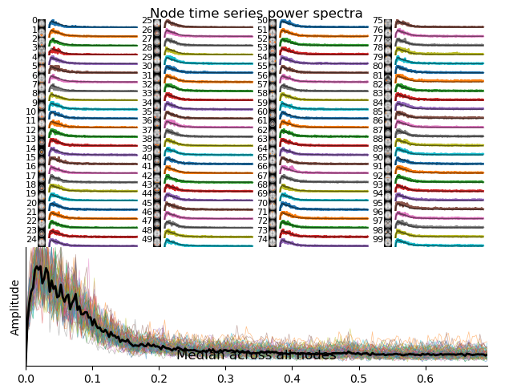
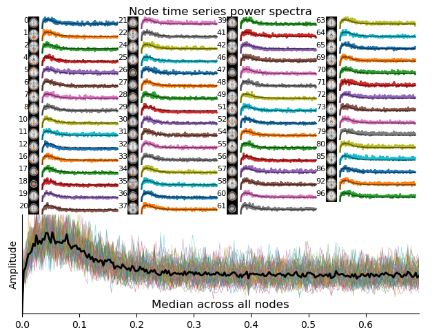

Resting state with FSLnets#
This interactive demonstration is based on the official FSL course “Resting state FSLnets practical”.
FSLnets is a toolbox for analyzing brain network connectivity from fMRI time series, typically derived from resting-state data. It takes as input the timecourses from specific brain regions, usually obtained via group-ICA and dual regression, and computes subject-level connectivity matrices using full or partial correlations. These network matrices can then be used for statistical comparisons across subjects or groups.
Author: Monika Doerig
Citation:#
Tools included in this workflow#
FSL/ FSLnets:
M. Jenkinson, C.F. Beckmann, T.E. Behrens, M.W. Woolrich, S.M. Smith. FSL. NeuroImage, 62:782-90, 2012. https://doi.org/10.1016/j.neuroimage.2011.09.015
Smith SM, Beckmann CF, Auerbach EJ, et al. (2013). Resting-state fMRI in the Human Connectome Project. NeuroImage, 80, 144–168. https://doi.org/10.1016/j.neuroimage.2013.05.039
Educational resources#
Dataset#
Output CPU information#
!cat /proc/cpuinfo | grep 'vendor' | uniq
!cat /proc/cpuinfo | grep 'model name' | uniq
vendor_id : GenuineIntel
model name : Intel(R) Xeon(R) Gold 6126 CPU @ 2.60GHz
Introduction to FSLnets#
FSLnets enables network modeling of fMRI data by analyzing the temporal relationships between brain regions. It is particularly useful for group-level studies of functional connectivity, where the goal is to identify differences or commonalities in brain network organization
The typical FSLnets pipeline includes:
Extracting subject-level timeseries spatial node maps (e.g., dual regression outputs)
Identifying and removing structured noise components from the data
Computing full or partial correlation matrices (netmats) for each subject
Exploring group-average connectivity patterns and hierarchical node clustering
Performing statistical comparisons of connectivity across subjects or group
(Optional) Conducting multivariate cross-subject analysis, which uses the full network matrix to classify or differentiate groups (e.g., patients vs. controls) using machine learning techniques like linear discriminant analysis (LDA), support vector machines (SVM), or random forests
This notebook guides you through the core steps of network analysis: estimating connectivity matrices, comparing them across groups, and visualizing the results.
For a full pipeline and detailed information about the steps, refer to the complete Resting state FSLnets practical.
Load FSL and Import Python libraries#
import module
await module.load('fsl/6.0.7.16')
await module.list()
['fsl/6.0.7.16']
import subprocess
from IPython.display import Image, Markdown
import numpy as np
Download course material#
!wget -c -nc https://fsl.fmrib.ox.ac.uk/fslcourse/downloads/rest.tar.gz
!tar -xzvf rest.tar.gz --wildcards --no-anchored 'rest/Nets/*'
!rm -r rest.tar.gz
--2025-07-30 04:38:38-- https://fsl.fmrib.ox.ac.uk/fslcourse/downloads/rest.tar.gz
Resolving fsl.fmrib.ox.ac.uk (fsl.fmrib.ox.ac.uk)... 129.67.248.66
Connecting to fsl.fmrib.ox.ac.uk (fsl.fmrib.ox.ac.uk)|129.67.248.66|:443... connected.
HTTP request sent, awaiting response... 200 OK
Length: 15935669577 (15G) [application/x-gzip]
Saving to: ‘rest.tar.gz’
rest.tar.gz 100%[===================>] 14.84G 62.4MB/s in 4m 44s
2025-07-30 04:43:23 (53.5 MB/s) - ‘rest.tar.gz’ saved [15935669577/15935669577]
fsl_course_data/rest/Nets/groupICA100/
fsl_course_data/rest/Nets/groupICA100/Noise__inv.nii.gz
fsl_course_data/rest/Nets/groupICA100/mask.nii.gz
fsl_course_data/rest/Nets/groupICA100/melodic_pca.nii.gz
fsl_course_data/rest/Nets/groupICA100/report/
fsl_course_data/rest/Nets/groupICA100/report/IC_76_prob.png
fsl_course_data/rest/Nets/groupICA100/report/IC_90_thresh.png
fsl_course_data/rest/Nets/groupICA100/report/IC_49_MMfit.png
fsl_course_data/rest/Nets/groupICA100/report/IC_13_thresh.png
fsl_course_data/rest/Nets/groupICA100/report/IC_79_prob.png
fsl_course_data/rest/Nets/groupICA100/report/IC_60_thresh.png
fsl_course_data/rest/Nets/groupICA100/report/IC_74.png
fsl_course_data/rest/Nets/groupICA100/report/IC_17_MMfit.png
fsl_course_data/rest/Nets/groupICA100/report/IC_86_thresh.png
fsl_course_data/rest/Nets/groupICA100/report/IC_90_prob.png
fsl_course_data/rest/Nets/groupICA100/report/IC_99_MM.html
fsl_course_data/rest/Nets/groupICA100/report/IC_16.html
fsl_course_data/rest/Nets/groupICA100/report/IC_76_thresh.png
fsl_course_data/rest/Nets/groupICA100/report/IC_9.png
fsl_course_data/rest/Nets/groupICA100/report/IC_69_MM.html
fsl_course_data/rest/Nets/groupICA100/report/IC_27.html
fsl_course_data/rest/Nets/groupICA100/report/IC_91_MM.html
fsl_course_data/rest/Nets/groupICA100/report/IC_61_MM.html
fsl_course_data/rest/Nets/groupICA100/report/IC_2_MM.html
fsl_course_data/rest/Nets/groupICA100/report/IC_65_MM.html
fsl_course_data/rest/Nets/groupICA100/report/IC_29_thresh.png
fsl_course_data/rest/Nets/groupICA100/report/IC_21_prob.png
fsl_course_data/rest/Nets/groupICA100/report/IC_6_MM.html
fsl_course_data/rest/Nets/groupICA100/report/IC_95_MM.html
fsl_course_data/rest/Nets/groupICA100/report/IC_85.html
fsl_course_data/rest/Nets/groupICA100/report/IC_73.png
fsl_course_data/rest/Nets/groupICA100/report/IC_61_MMfit.png
fsl_course_data/rest/Nets/groupICA100/report/IC_16_MMfit.png
fsl_course_data/rest/Nets/groupICA100/report/IC_69_prob.png
fsl_course_data/rest/Nets/groupICA100/report/IC_45.html
fsl_course_data/rest/Nets/groupICA100/report/IC_66_prob.png
fsl_course_data/rest/Nets/groupICA100/report/IC_48_MMfit.png
fsl_course_data/rest/Nets/groupICA100/report/IC_80_prob.png
fsl_course_data/rest/Nets/groupICA100/report/IC_46_MM.html
fsl_course_data/rest/Nets/groupICA100/report/IC_60_MMfit.png
fsl_course_data/rest/Nets/groupICA100/report/IC_42_MM.html
fsl_course_data/rest/Nets/groupICA100/report/IC_7.png
fsl_course_data/rest/Nets/groupICA100/report/IC_74.html
fsl_course_data/rest/Nets/groupICA100/report/IC_31_prob.png
fsl_course_data/rest/Nets/groupICA100/report/IC_68.html
fsl_course_data/rest/Nets/groupICA100/report/IC_23.html
fsl_course_data/rest/Nets/groupICA100/report/IC_23_MM.html
fsl_course_data/rest/Nets/groupICA100/report/IC_59_prob.png
fsl_course_data/rest/Nets/groupICA100/report/IC_15_MMfit.png
fsl_course_data/rest/Nets/groupICA100/report/IC_56_prob.png
fsl_course_data/rest/Nets/groupICA100/report/IC_27_MM.html
fsl_course_data/rest/Nets/groupICA100/report/IC_33.png
fsl_course_data/rest/Nets/groupICA100/report/IC_81.html
fsl_course_data/rest/Nets/groupICA100/report/IC_63_MMfit.png
fsl_course_data/rest/Nets/groupICA100/report/IC_34.png
fsl_course_data/rest/Nets/groupICA100/report/IC_12.html
fsl_course_data/rest/Nets/groupICA100/report/IC_59.html
fsl_course_data/rest/Nets/groupICA100/report/IC_8_prob.png
fsl_course_data/rest/Nets/groupICA100/report/IC_99.png
fsl_course_data/rest/Nets/groupICA100/report/IC_7_prob.png
fsl_course_data/rest/Nets/groupICA100/report/IC_48.png
fsl_course_data/rest/Nets/groupICA100/report/IC_7_thresh.png
fsl_course_data/rest/Nets/groupICA100/report/IC_99.html
fsl_course_data/rest/Nets/groupICA100/report/IC_22_thresh.png
fsl_course_data/rest/Nets/groupICA100/report/IC_51_thresh.png
fsl_course_data/rest/Nets/groupICA100/report/IC_34_thresh.png
fsl_course_data/rest/Nets/groupICA100/report/IC_46_prob.png
fsl_course_data/rest/Nets/groupICA100/report/IC_47_thresh.png
fsl_course_data/rest/Nets/groupICA100/report/IC_97.png
fsl_course_data/rest/Nets/groupICA100/report/IC_70.html
fsl_course_data/rest/Nets/groupICA100/report/IC_14_MMfit.png
fsl_course_data/rest/Nets/groupICA100/report/IC_46.png
fsl_course_data/rest/Nets/groupICA100/report/IC_49_prob.png
fsl_course_data/rest/Nets/groupICA100/report/IC_8.html
fsl_course_data/rest/Nets/groupICA100/report/IC_11_prob.png
fsl_course_data/rest/Nets/groupICA100/report/IC_90.png
fsl_course_data/rest/Nets/groupICA100/report/IC_62_MMfit.png
fsl_course_data/rest/Nets/groupICA100/report/IC_41.png
fsl_course_data/rest/Nets/groupICA100/report/IC_41.html
fsl_course_data/rest/Nets/groupICA100/report/IC_18_thresh.png
fsl_course_data/rest/Nets/groupICA100/report/IC_100_prob.png
fsl_course_data/rest/Nets/groupICA100/report/IC_50.png
fsl_course_data/rest/Nets/groupICA100/report/IC_9_MMfit.png
fsl_course_data/rest/Nets/groupICA100/report/IC_100_thresh.png
fsl_course_data/rest/Nets/groupICA100/report/IC_61_prob.png
fsl_course_data/rest/Nets/groupICA100/report/IC_81.png
fsl_course_data/rest/Nets/groupICA100/report/IC_65_MMfit.png
fsl_course_data/rest/Nets/groupICA100/report/IC_87_prob.png
fsl_course_data/rest/Nets/groupICA100/report/IC_88_prob.png
fsl_course_data/rest/Nets/groupICA100/report/IC_36_MM.html
fsl_course_data/rest/Nets/groupICA100/report/IC_88_MMfit.png
fsl_course_data/rest/Nets/groupICA100/report/IC_95.html
fsl_course_data/rest/Nets/groupICA100/report/IC_57.png
fsl_course_data/rest/Nets/groupICA100/report/IC_37.html
fsl_course_data/rest/Nets/groupICA100/report/IC_36_prob.png
fsl_course_data/rest/Nets/groupICA100/report/IC_4.html
fsl_course_data/rest/Nets/groupICA100/report/IC_86.png
fsl_course_data/rest/Nets/groupICA100/report/IC_13_MMfit.png
fsl_course_data/rest/Nets/groupICA100/report/IC_32_MM.html
fsl_course_data/rest/Nets/groupICA100/report/IC_39_prob.png
fsl_course_data/rest/Nets/groupICA100/report/IC_25.png
fsl_course_data/rest/Nets/groupICA100/report/IC_64_MMfit.png
fsl_course_data/rest/Nets/groupICA100/report/IC_40_thresh.png
fsl_course_data/rest/Nets/groupICA100/report/IC_33_thresh.png
fsl_course_data/rest/Nets/groupICA100/report/IC_71_prob.png
fsl_course_data/rest/Nets/groupICA100/report/IC_8_MMfit.png
fsl_course_data/rest/Nets/groupICA100/report/IC_59.png
fsl_course_data/rest/Nets/groupICA100/report/IC_98_prob.png
fsl_course_data/rest/Nets/groupICA100/report/IC_56_thresh.png
fsl_course_data/rest/Nets/groupICA100/report/IC_88.png
fsl_course_data/rest/Nets/groupICA100/report/IC_19_MM.html
fsl_course_data/rest/Nets/groupICA100/report/IC_25_thresh.png
fsl_course_data/rest/Nets/groupICA100/report/IC_97_prob.png
fsl_course_data/rest/Nets/groupICA100/report/IC_55.html
fsl_course_data/rest/Nets/groupICA100/report/IC_11_MM.html
fsl_course_data/rest/Nets/groupICA100/report/IC_89_MMfit.png
fsl_course_data/rest/Nets/groupICA100/report/IC_64.html
fsl_course_data/rest/Nets/groupICA100/report/IC_22.png
fsl_course_data/rest/Nets/groupICA100/report/IC_29_prob.png
fsl_course_data/rest/Nets/groupICA100/report/IC_12_MMfit.png
fsl_course_data/rest/Nets/groupICA100/report/IC_26_prob.png
fsl_course_data/rest/Nets/groupICA100/report/IC_15_MM.html
fsl_course_data/rest/Nets/groupICA100/report/IC_84_MM.html
fsl_course_data/rest/Nets/groupICA100/report/IC_71_thresh.png
fsl_course_data/rest/Nets/groupICA100/report/IC_91.html
fsl_course_data/rest/Nets/groupICA100/report/IC_74_MM.html
fsl_course_data/rest/Nets/groupICA100/report/IC_81_thresh.png
fsl_course_data/rest/Nets/groupICA100/report/IC_67_MMfit.png
fsl_course_data/rest/Nets/groupICA100/report/IC_33.html
fsl_course_data/rest/Nets/groupICA100/report/IC_67_thresh.png
fsl_course_data/rest/Nets/groupICA100/report/IC_70_MM.html
fsl_course_data/rest/Nets/groupICA100/report/IC_78.html
fsl_course_data/rest/Nets/groupICA100/report/IC_17.png
fsl_course_data/rest/Nets/groupICA100/report/IC_14_thresh.png
fsl_course_data/rest/Nets/groupICA100/report/IC_39_MMfit.png
fsl_course_data/rest/Nets/groupICA100/report/IC_41_prob.png
fsl_course_data/rest/Nets/groupICA100/report/IC_97_thresh.png
fsl_course_data/rest/Nets/groupICA100/report/IC_80_MM.html
fsl_course_data/rest/Nets/groupICA100/report/IC_78_MM.html
fsl_course_data/rest/Nets/groupICA100/report/IC_11_MMfit.png
fsl_course_data/rest/Nets/groupICA100/report/IC_49.html
fsl_course_data/rest/Nets/groupICA100/report/IC_10.png
fsl_course_data/rest/Nets/groupICA100/report/IC_19_prob.png
fsl_course_data/rest/Nets/groupICA100/report/IC_88_MM.html
fsl_course_data/rest/Nets/groupICA100/report/IC_16_prob.png
fsl_course_data/rest/Nets/groupICA100/report/IC_38_thresh.png
fsl_course_data/rest/Nets/groupICA100/report/IC_60.html
fsl_course_data/rest/Nets/groupICA100/report/IC_53_MM.html
fsl_course_data/rest/Nets/groupICA100/report/IC_38_MMfit.png
fsl_course_data/rest/Nets/groupICA100/report/IC_51_prob.png
fsl_course_data/rest/Nets/groupICA100/report/IC_89.html
fsl_course_data/rest/Nets/groupICA100/report/IC_57_MM.html
fsl_course_data/rest/Nets/groupICA100/report/IC_62.png
fsl_course_data/rest/Nets/groupICA100/report/IC_66_MMfit.png
fsl_course_data/rest/Nets/groupICA100/report/IC_65.png
fsl_course_data/rest/Nets/groupICA100/report/IC_10_MMfit.png
fsl_course_data/rest/Nets/groupICA100/report/IC_19.png
fsl_course_data/rest/Nets/groupICA100/report/IC_51.html
fsl_course_data/rest/Nets/groupICA100/report/IC_37_MM.html
fsl_course_data/rest/Nets/groupICA100/report/IC_57_prob.png
fsl_course_data/rest/Nets/groupICA100/report/IC_91.png
fsl_course_data/rest/Nets/groupICA100/report/IC_40.png
fsl_course_data/rest/Nets/groupICA100/report/IC_58_prob.png
fsl_course_data/rest/Nets/groupICA100/report/IC_4_MMfit.png
fsl_course_data/rest/Nets/groupICA100/report/IC_36_MMfit.png
fsl_course_data/rest/Nets/groupICA100/report/IC_33_MM.html
fsl_course_data/rest/Nets/groupICA100/report/IC_68_MMfit.png
fsl_course_data/rest/Nets/groupICA100/report/IC_94.html
fsl_course_data/rest/Nets/groupICA100/report/IC_6_prob.png
fsl_course_data/rest/Nets/groupICA100/report/IC_40_MMfit.png
fsl_course_data/rest/Nets/groupICA100/report/IC_9_prob.png
fsl_course_data/rest/Nets/groupICA100/report/IC_85_MMfit.png
fsl_course_data/rest/Nets/groupICA100/report/IC_36.html
fsl_course_data/rest/Nets/groupICA100/report/IC_5.html
fsl_course_data/rest/Nets/groupICA100/report/IC_96.png
fsl_course_data/rest/Nets/groupICA100/report/IC_47.png
fsl_course_data/rest/Nets/groupICA100/report/IC_48_prob.png
fsl_course_data/rest/Nets/groupICA100/report/IC_10_MM.html
fsl_course_data/rest/Nets/groupICA100/report/IC_84_thresh.png
fsl_course_data/rest/Nets/groupICA100/report/IC_47_prob.png
fsl_course_data/rest/Nets/groupICA100/report/IC_74_thresh.png
fsl_course_data/rest/Nets/groupICA100/report/IC_35.png
fsl_course_data/rest/Nets/groupICA100/report/IC_54.html
fsl_course_data/rest/Nets/groupICA100/report/IC_11_thresh.png
fsl_course_data/rest/Nets/groupICA100/report/IC_69_MMfit.png
fsl_course_data/rest/Nets/groupICA100/report/IC_92_thresh.png
fsl_course_data/rest/Nets/groupICA100/report/IC_14_MM.html
fsl_course_data/rest/Nets/groupICA100/report/IC_37_MMfit.png
fsl_course_data/rest/Nets/groupICA100/report/IC_98.png
fsl_course_data/rest/Nets/groupICA100/report/IC_49.png
fsl_course_data/rest/Nets/groupICA100/report/IC_5_MMfit.png
fsl_course_data/rest/Nets/groupICA100/report/IC_62_thresh.png
fsl_course_data/rest/Nets/groupICA100/report/IC_65.html
fsl_course_data/rest/Nets/groupICA100/report/IC_41_MMfit.png
fsl_course_data/rest/Nets/groupICA100/report/IC_58_thresh.png
fsl_course_data/rest/Nets/groupICA100/report/IC_18_MM.html
fsl_course_data/rest/Nets/groupICA100/report/IC_10_prob.png
fsl_course_data/rest/Nets/groupICA100/report/IC_84_MMfit.png
fsl_course_data/rest/Nets/groupICA100/report/IC_32.png
fsl_course_data/rest/Nets/groupICA100/report/IC_36_thresh.png
fsl_course_data/rest/Nets/groupICA100/report/IC_79_MM.html
fsl_course_data/rest/Nets/groupICA100/report/IC_90.html
fsl_course_data/rest/Nets/groupICA100/report/IC_6_MMfit.png
fsl_course_data/rest/Nets/groupICA100/report/IC_89_MM.html
fsl_course_data/rest/Nets/groupICA100/report/IC_45_thresh.png
fsl_course_data/rest/Nets/groupICA100/report/IC_34_MMfit.png
fsl_course_data/rest/Nets/groupICA100/report/IC_91_prob.png
fsl_course_data/rest/Nets/groupICA100/report/IC_20_thresh.png
fsl_course_data/rest/Nets/groupICA100/report/IC_78_prob.png
fsl_course_data/rest/Nets/groupICA100/report/IC_79.html
fsl_course_data/rest/Nets/groupICA100/report/IC_6.png
fsl_course_data/rest/Nets/groupICA100/report/IC_32.html
fsl_course_data/rest/Nets/groupICA100/report/IC_1.html
fsl_course_data/rest/Nets/groupICA100/report/IC_100_MMfit.png
fsl_course_data/rest/Nets/groupICA100/report/IC_77_prob.png
fsl_course_data/rest/Nets/groupICA100/report/IC_53_thresh.png
fsl_course_data/rest/Nets/groupICA100/report/IC_99_thresh.png
fsl_course_data/rest/Nets/groupICA100/report/IC_85_MM.html
fsl_course_data/rest/Nets/groupICA100/report/IC_69_thresh.png
fsl_course_data/rest/Nets/groupICA100/report/IC_1.png
fsl_course_data/rest/Nets/groupICA100/report/IC_87_MMfit.png
fsl_course_data/rest/Nets/groupICA100/report/IC_20_prob.png
fsl_course_data/rest/Nets/groupICA100/report/IC_75_MM.html
fsl_course_data/rest/Nets/groupICA100/report/IC_48.html
fsl_course_data/rest/Nets/groupICA100/report/IC_71_MM.html
fsl_course_data/rest/Nets/groupICA100/report/IC_81_MM.html
fsl_course_data/rest/Nets/groupICA100/report/IC_42_MMfit.png
fsl_course_data/rest/Nets/groupICA100/report/IC_61.html
fsl_course_data/rest/Nets/groupICA100/report/IC_35_MMfit.png
fsl_course_data/rest/Nets/groupICA100/report/IC_81_prob.png
fsl_course_data/rest/Nets/groupICA100/report/IC_7_MMfit.png
fsl_course_data/rest/Nets/groupICA100/report/IC_67_prob.png
fsl_course_data/rest/Nets/groupICA100/report/IC_72.png
fsl_course_data/rest/Nets/groupICA100/report/IC_68_prob.png
fsl_course_data/rest/Nets/groupICA100/report/IC_88.html
fsl_course_data/rest/Nets/groupICA100/report/IC_86_MMfit.png
fsl_course_data/rest/Nets/groupICA100/report/IC_30_prob.png
fsl_course_data/rest/Nets/groupICA100/report/IC_5_thresh.png
fsl_course_data/rest/Nets/groupICA100/report/IC_75.png
fsl_course_data/rest/Nets/groupICA100/report/IC_52_MM.html
fsl_course_data/rest/Nets/groupICA100/report/IC_43_MMfit.png
fsl_course_data/rest/Nets/groupICA100/report/IC_50.html
fsl_course_data/rest/Nets/groupICA100/report/IC_56_MM.html
fsl_course_data/rest/Nets/groupICA100/report/IC_8.png
fsl_course_data/rest/Nets/groupICA100/report/EVplot.png
fsl_course_data/rest/Nets/groupICA100/report/IC_54_thresh.png
fsl_course_data/rest/Nets/groupICA100/report/IC_90_MM.html
fsl_course_data/rest/Nets/groupICA100/report/IC_40_prob.png
fsl_course_data/rest/Nets/groupICA100/report/IC_81_MMfit.png
fsl_course_data/rest/Nets/groupICA100/report/IC_64.png
fsl_course_data/rest/Nets/groupICA100/report/IC_60_MM.html
fsl_course_data/rest/Nets/groupICA100/report/IC_27_thresh.png
fsl_course_data/rest/Nets/groupICA100/report/IC_3_MM.html
fsl_course_data/rest/Nets/groupICA100/report/IC_44_MMfit.png
fsl_course_data/rest/Nets/groupICA100/report/IC_64_MM.html
fsl_course_data/rest/Nets/groupICA100/report/IC_42_thresh.png
fsl_course_data/rest/Nets/groupICA100/report/IC_7_MM.html
fsl_course_data/rest/Nets/groupICA100/report/IC_18.png
fsl_course_data/rest/Nets/groupICA100/report/IC_94_MM.html
fsl_course_data/rest/Nets/groupICA100/report/IC_17.html
fsl_course_data/rest/Nets/groupICA100/report/IC_31_thresh.png
fsl_course_data/rest/Nets/groupICA100/report/IC_32_MMfit.png
fsl_course_data/rest/Nets/groupICA100/report/IC_78_thresh.png
fsl_course_data/rest/Nets/groupICA100/report/IC_88_thresh.png
fsl_course_data/rest/Nets/groupICA100/report/IC_26.html
fsl_course_data/rest/Nets/groupICA100/report/IC_17_prob.png
fsl_course_data/rest/Nets/groupICA100/report/IC_84.html
fsl_course_data/rest/Nets/groupICA100/report/IC_98_MM.html
fsl_course_data/rest/Nets/groupICA100/report/IC_63.png
fsl_course_data/rest/Nets/groupICA100/report/IC_18_prob.png
fsl_course_data/rest/Nets/groupICA100/report/IC_68_MM.html
fsl_course_data/rest/Nets/groupICA100/report/IC_44.html
fsl_course_data/rest/Nets/groupICA100/report/IC_11.png
fsl_course_data/rest/Nets/groupICA100/report/IC_47_MM.html
fsl_course_data/rest/Nets/groupICA100/report/IC_50_prob.png
fsl_course_data/rest/Nets/groupICA100/report/IC_80_MMfit.png
fsl_course_data/rest/Nets/groupICA100/report/IC_100_MM.html
fsl_course_data/rest/Nets/groupICA100/report/IC_43_MM.html
fsl_course_data/rest/Nets/groupICA100/report/IC_45_MMfit.png
fsl_course_data/rest/Nets/groupICA100/report/IC_1_prob.png
fsl_course_data/rest/Nets/groupICA100/report/IC_1_MMfit.png
fsl_course_data/rest/Nets/groupICA100/report/IC_33_MMfit.png
fsl_course_data/rest/Nets/groupICA100/report/IC_75.html
fsl_course_data/rest/Nets/groupICA100/report/IC_2_thresh.png
fsl_course_data/rest/Nets/groupICA100/report/IC_16.png
fsl_course_data/rest/Nets/groupICA100/report/IC_89_prob.png
fsl_course_data/rest/Nets/groupICA100/report/IC_9_thresh.png
fsl_course_data/rest/Nets/groupICA100/report/IC_18_MMfit.png
fsl_course_data/rest/Nets/groupICA100/report/IC_22.html
fsl_course_data/rest/Nets/groupICA100/report/IC_86_prob.png
fsl_course_data/rest/Nets/groupICA100/report/IC_46_MMfit.png
fsl_course_data/rest/Nets/groupICA100/report/IC_69.html
fsl_course_data/rest/Nets/groupICA100/report/IC_23.png
fsl_course_data/rest/Nets/groupICA100/report/IC_80.html
fsl_course_data/rest/Nets/groupICA100/report/IC_83_MMfit.png
fsl_course_data/rest/Nets/groupICA100/report/IC_60_prob.png
fsl_course_data/rest/Nets/groupICA100/report/IC_24.png
fsl_course_data/rest/Nets/groupICA100/report/IC_38_prob.png
fsl_course_data/rest/Nets/groupICA100/report/IC_22_MM.html
fsl_course_data/rest/Nets/groupICA100/report/IC_37_prob.png
fsl_course_data/rest/Nets/groupICA100/report/IC_58.png
fsl_course_data/rest/Nets/groupICA100/report/IC_89.png
fsl_course_data/rest/Nets/groupICA100/report/IC_58.html
fsl_course_data/rest/Nets/groupICA100/report/IC_30_MMfit.png
fsl_course_data/rest/Nets/groupICA100/report/IC_13.html
fsl_course_data/rest/Nets/groupICA100/report/IC_2_MMfit.png
fsl_course_data/rest/Nets/groupICA100/report/IC_26_MM.html
fsl_course_data/rest/Nets/groupICA100/report/IC_65_thresh.png
fsl_course_data/rest/Nets/groupICA100/report/IC_96_prob.png
fsl_course_data/rest/Nets/groupICA100/report/IC_47_MMfit.png
fsl_course_data/rest/Nets/groupICA100/report/IC_95_thresh.png
fsl_course_data/rest/Nets/groupICA100/report/IC_98.html
fsl_course_data/rest/Nets/groupICA100/report/IC_19_MMfit.png
fsl_course_data/rest/Nets/groupICA100/report/IC_99_prob.png
fsl_course_data/rest/Nets/groupICA100/report/IC_16_thresh.png
fsl_course_data/rest/Nets/groupICA100/report/IC_56.png
fsl_course_data/rest/Nets/groupICA100/report/IC_9.html
fsl_course_data/rest/Nets/groupICA100/report/IC_73_thresh.png
fsl_course_data/rest/Nets/groupICA100/report/IC_82_MMfit.png
fsl_course_data/rest/Nets/groupICA100/report/IC_70_prob.png
fsl_course_data/rest/Nets/groupICA100/report/IC_87.png
fsl_course_data/rest/Nets/groupICA100/report/IC_71.html
fsl_course_data/rest/Nets/groupICA100/report/IC_83_thresh.png
fsl_course_data/rest/Nets/groupICA100/report/IC_51.png
fsl_course_data/rest/Nets/groupICA100/report/IC_40.html
fsl_course_data/rest/Nets/groupICA100/report/IC_49_thresh.png
fsl_course_data/rest/Nets/groupICA100/report/IC_80.png
fsl_course_data/rest/Nets/groupICA100/report/IC_27_prob.png
fsl_course_data/rest/Nets/groupICA100/report/IC_28_prob.png
fsl_course_data/rest/Nets/groupICA100/report/IC_3_MMfit.png
fsl_course_data/rest/Nets/groupICA100/report/IC_31_MMfit.png
fsl_course_data/rest/Nets/groupICA100/report/IC_12_MM.html
fsl_course_data/rest/Nets/groupICA100/report/IC_34_prob.png
fsl_course_data/rest/Nets/groupICA100/report/IC_23_MMfit.png
fsl_course_data/rest/Nets/groupICA100/report/IC_60.png
fsl_course_data/rest/Nets/groupICA100/report/IC_3_thresh.png
fsl_course_data/rest/Nets/groupICA100/report/IC_16_MM.html
fsl_course_data/rest/Nets/groupICA100/report/IC_34.html
fsl_course_data/rest/Nets/groupICA100/report/IC_7.html
fsl_course_data/rest/Nets/groupICA100/report/IC_67.png
fsl_course_data/rest/Nets/groupICA100/report/IC_85_prob.png
fsl_course_data/rest/Nets/groupICA100/report/IC_90_MMfit.png
fsl_course_data/rest/Nets/groupICA100/report/IC_63_prob.png
fsl_course_data/rest/Nets/groupICA100/report/IC_96.html
fsl_course_data/rest/Nets/groupICA100/report/IC_55_MMfit.png
fsl_course_data/rest/Nets/groupICA100/report/IC_100.html
fsl_course_data/rest/Nets/groupICA100/report/IC_22_MMfit.png
fsl_course_data/rest/Nets/groupICA100/report/IC_35_MM.html
fsl_course_data/rest/Nets/groupICA100/report/IC_69.png
fsl_course_data/rest/Nets/groupICA100/report/IC_24_prob.png
fsl_course_data/rest/Nets/groupICA100/report/IC_79_thresh.png
fsl_course_data/rest/Nets/groupICA100/report/IC_56.html
fsl_course_data/rest/Nets/groupICA100/report/IC_89_thresh.png
fsl_course_data/rest/Nets/groupICA100/report/IC_15.png
fsl_course_data/rest/Nets/groupICA100/report/IC_31_MM.html
fsl_course_data/rest/Nets/groupICA100/report/IC_55_thresh.png
fsl_course_data/rest/Nets/groupICA100/report/IC_91_MMfit.png
fsl_course_data/rest/Nets/groupICA100/report/IC_95_prob.png
fsl_course_data/rest/Nets/groupICA100/report/IC_12.png
fsl_course_data/rest/Nets/groupICA100/report/IC_39_MM.html
fsl_course_data/rest/Nets/groupICA100/report/IC_26_thresh.png
fsl_course_data/rest/Nets/groupICA100/report/IC_54_MMfit.png
fsl_course_data/rest/Nets/groupICA100/report/IC_43_thresh.png
fsl_course_data/rest/Nets/groupICA100/report/IC_73_prob.png
fsl_course_data/rest/Nets/groupICA100/report/log.html
fsl_course_data/rest/Nets/groupICA100/report/IC_30_thresh.png
fsl_course_data/rest/Nets/groupICA100/report/IC_67.html
fsl_course_data/rest/Nets/groupICA100/report/IC_27.png
fsl_course_data/rest/Nets/groupICA100/report/IC_30.html
fsl_course_data/rest/Nets/groupICA100/report/IC_48_thresh.png
fsl_course_data/rest/Nets/groupICA100/report/IC_3.html
fsl_course_data/rest/Nets/groupICA100/report/IC_14_prob.png
fsl_course_data/rest/Nets/groupICA100/report/IC_21_MMfit.png
fsl_course_data/rest/Nets/groupICA100/report/IC_92.html
fsl_course_data/rest/Nets/groupICA100/report/IC_58_MM.html
fsl_course_data/rest/Nets/groupICA100/report/IC_64_thresh.png
fsl_course_data/rest/Nets/groupICA100/report/IC_43_prob.png
fsl_course_data/rest/Nets/groupICA100/report/IC_57_MMfit.png
fsl_course_data/rest/Nets/groupICA100/report/IC_50_MM.html
fsl_course_data/rest/Nets/groupICA100/report/IC_94_thresh.png
fsl_course_data/rest/Nets/groupICA100/report/IC_17_thresh.png
fsl_course_data/rest/Nets/groupICA100/report/IC_72_thresh.png
fsl_course_data/rest/Nets/groupICA100/report/IC_20.png
fsl_course_data/rest/Nets/groupICA100/report/IC_54_MM.html
fsl_course_data/rest/Nets/groupICA100/report/IC_92_MMfit.png
fsl_course_data/rest/Nets/groupICA100/report/IC_82_thresh.png
fsl_course_data/rest/Nets/groupICA100/report/IC_52.png
fsl_course_data/rest/Nets/groupICA100/report/IC_83.png
fsl_course_data/rest/Nets/groupICA100/report/IC_2_prob.png
fsl_course_data/rest/Nets/groupICA100/report/IC_63.html
fsl_course_data/rest/Nets/groupICA100/report/IC_20_MMfit.png
fsl_course_data/rest/Nets/groupICA100/report/IC_28.html
fsl_course_data/rest/Nets/groupICA100/report/IC_87_MM.html
fsl_course_data/rest/Nets/groupICA100/report/IC_8_thresh.png
fsl_course_data/rest/Nets/groupICA100/report/IC_29.png
fsl_course_data/rest/Nets/groupICA100/report/IC_77_MM.html
fsl_course_data/rest/Nets/groupICA100/report/IC_19.html
fsl_course_data/rest/Nets/groupICA100/report/IC_56_MMfit.png
fsl_course_data/rest/Nets/groupICA100/report/IC_52.html
fsl_course_data/rest/Nets/groupICA100/report/IC_53_prob.png
fsl_course_data/rest/Nets/groupICA100/report/IC_55.png
fsl_course_data/rest/Nets/groupICA100/report/IC_73_MM.html
fsl_course_data/rest/Nets/groupICA100/report/IC_84.png
fsl_course_data/rest/Nets/groupICA100/report/IC_93_MMfit.png
fsl_course_data/rest/Nets/groupICA100/report/IC_83_MM.html
fsl_course_data/rest/Nets/groupICA100/report/IC_15.html
fsl_course_data/rest/Nets/groupICA100/report/IC_51_MMfit.png
fsl_course_data/rest/Nets/groupICA100/report/IC_59_thresh.png
fsl_course_data/rest/Nets/groupICA100/report/IC_23_prob.png
fsl_course_data/rest/Nets/groupICA100/report/IC_38.png
fsl_course_data/rest/Nets/groupICA100/report/IC_45_MM.html
fsl_course_data/rest/Nets/groupICA100/report/IC_41_MM.html
fsl_course_data/rest/Nets/groupICA100/report/IC_95.png
fsl_course_data/rest/Nets/groupICA100/report/IC_94_MMfit.png
fsl_course_data/rest/Nets/groupICA100/report/IC_44.png
fsl_course_data/rest/Nets/groupICA100/report/IC_49_MM.html
fsl_course_data/rest/Nets/groupICA100/report/IC_85_thresh.png
fsl_course_data/rest/Nets/groupICA100/report/IC_92.png
fsl_course_data/rest/Nets/groupICA100/report/IC_75_thresh.png
fsl_course_data/rest/Nets/groupICA100/report/IC_86.html
fsl_course_data/rest/Nets/groupICA100/report/IC_43.png
fsl_course_data/rest/Nets/groupICA100/report/IC_92_prob.png
fsl_course_data/rest/Nets/groupICA100/report/IC_10_thresh.png
fsl_course_data/rest/Nets/groupICA100/report/IC_24.html
fsl_course_data/rest/Nets/groupICA100/report/IC_93_thresh.png
fsl_course_data/rest/Nets/groupICA100/report/IC_79_MMfit.png
fsl_course_data/rest/Nets/groupICA100/report/IC_27_MMfit.png
fsl_course_data/rest/Nets/groupICA100/report/IC_74_prob.png
fsl_course_data/rest/Nets/groupICA100/report/IC_63_thresh.png
fsl_course_data/rest/Nets/groupICA100/report/IC_33_prob.png
fsl_course_data/rest/Nets/groupICA100/report/IC_50_MMfit.png
fsl_course_data/rest/Nets/groupICA100/report/IC_92_MM.html
fsl_course_data/rest/Nets/groupICA100/report/IC_1_MM.html
fsl_course_data/rest/Nets/groupICA100/report/IC_62_MM.html
fsl_course_data/rest/Nets/groupICA100/report/IC_5_MM.html
fsl_course_data/rest/Nets/groupICA100/report/IC_66_MM.html
fsl_course_data/rest/Nets/groupICA100/report/IC_95_MMfit.png
fsl_course_data/rest/Nets/groupICA100/report/IC_96_MM.html
fsl_course_data/rest/Nets/groupICA100/report/IC_46.html
fsl_course_data/rest/Nets/groupICA100/report/IC_31.png
fsl_course_data/rest/Nets/groupICA100/report/IC_82_prob.png
fsl_course_data/rest/Nets/groupICA100/report/IC_77.html
fsl_course_data/rest/Nets/groupICA100/report/IC_36.png
fsl_course_data/rest/Nets/groupICA100/report/IC_64_prob.png
fsl_course_data/rest/Nets/groupICA100/report/IC_26_MMfit.png
fsl_course_data/rest/Nets/groupICA100/report/IC_78_MMfit.png
fsl_course_data/rest/Nets/groupICA100/report/IC_9_MM.html
fsl_course_data/rest/Nets/groupICA100/report/IC_96_MMfit.png
fsl_course_data/rest/Nets/groupICA100/report/IC_5_prob.png
fsl_course_data/rest/Nets/groupICA100/report/IC_2.png
fsl_course_data/rest/Nets/groupICA100/report/IC_4_thresh.png
fsl_course_data/rest/Nets/groupICA100/report/IC_82.html
fsl_course_data/rest/Nets/groupICA100/report/IC_20.html
fsl_course_data/rest/Nets/groupICA100/report/IC_100.png
fsl_course_data/rest/Nets/groupICA100/report/IC_53_MMfit.png
fsl_course_data/rest/Nets/groupICA100/report/IC_25_MMfit.png
fsl_course_data/rest/Nets/groupICA100/report/IC_54_prob.png
fsl_course_data/rest/Nets/groupICA100/report/IC_11.html
fsl_course_data/rest/Nets/groupICA100/report/IC_78.png
fsl_course_data/rest/Nets/groupICA100/report/IC_5.png
fsl_course_data/rest/Nets/groupICA100/report/IC_98_thresh.png
fsl_course_data/rest/Nets/groupICA100/report/IC_76.png
fsl_course_data/rest/Nets/groupICA100/report/IC_38.html
fsl_course_data/rest/Nets/groupICA100/report/IC_68_thresh.png
fsl_course_data/rest/Nets/groupICA100/report/IC_97_MMfit.png
fsl_course_data/rest/Nets/groupICA100/report/IC_73.html
fsl_course_data/rest/Nets/groupICA100/report/IC_28_MM.html
fsl_course_data/rest/Nets/groupICA100/report/IC_13_prob.png
fsl_course_data/rest/Nets/groupICA100/report/IC_52_MMfit.png
fsl_course_data/rest/Nets/groupICA100/report/IC_37_thresh.png
fsl_course_data/rest/Nets/groupICA100/report/IC_20_MM.html
fsl_course_data/rest/Nets/groupICA100/report/IC_44_prob.png
fsl_course_data/rest/Nets/groupICA100/report/IC_44_thresh.png
fsl_course_data/rest/Nets/groupICA100/report/IC_24_MMfit.png
fsl_course_data/rest/Nets/groupICA100/report/IC_21_thresh.png
fsl_course_data/rest/Nets/groupICA100/report/IC_24_MM.html
fsl_course_data/rest/Nets/groupICA100/report/IC_71.png
fsl_course_data/rest/Nets/groupICA100/report/IC_42.html
fsl_course_data/rest/Nets/groupICA100/report/IC_52_thresh.png
fsl_course_data/rest/Nets/groupICA100/report/IC_48_MM.html
fsl_course_data/rest/Nets/groupICA100/report/IC_28.png
fsl_course_data/rest/Nets/groupICA100/report/IC_99_MMfit.png
fsl_course_data/rest/Nets/groupICA100/report/IC_15_prob.png
fsl_course_data/rest/Nets/groupICA100/report/IC_14.html
fsl_course_data/rest/Nets/groupICA100/report/IC_54.png
fsl_course_data/rest/Nets/groupICA100/report/IC_85.png
fsl_course_data/rest/Nets/groupICA100/report/IC_87.html
fsl_course_data/rest/Nets/groupICA100/report/IC_53.png
fsl_course_data/rest/Nets/groupICA100/report/IC_82.png
fsl_course_data/rest/Nets/groupICA100/report/IC_74_MMfit.png
fsl_course_data/rest/Nets/groupICA100/report/IC_41_thresh.png
fsl_course_data/rest/Nets/groupICA100/report/IC_32_thresh.png
fsl_course_data/rest/Nets/groupICA100/report/IC_44_MM.html
fsl_course_data/rest/Nets/groupICA100/report/IC_57_thresh.png
fsl_course_data/rest/Nets/groupICA100/report/IC_40_MM.html
fsl_course_data/rest/Nets/groupICA100/report/IC_24_thresh.png
fsl_course_data/rest/Nets/groupICA100/report/IC_25.html
fsl_course_data/rest/Nets/groupICA100/report/IC_42_prob.png
fsl_course_data/rest/Nets/groupICA100/report/IC_1_thresh.png
fsl_course_data/rest/Nets/groupICA100/report/IC_98_MMfit.png
fsl_course_data/rest/Nets/groupICA100/report/IC_47.html
fsl_course_data/rest/Nets/groupICA100/report/IC_21.png
fsl_course_data/rest/Nets/groupICA100/report/IC_3_prob.png
fsl_course_data/rest/Nets/groupICA100/report/IC_8_MM.html
fsl_course_data/rest/Nets/groupICA100/report/IC_26.png
fsl_course_data/rest/Nets/groupICA100/report/IC_76.html
fsl_course_data/rest/Nets/groupICA100/report/IC_93_MM.html
fsl_course_data/rest/Nets/groupICA100/report/IC_75_MMfit.png
fsl_course_data/rest/Nets/groupICA100/report/IC_63_MM.html
fsl_course_data/rest/Nets/groupICA100/report/IC_52_prob.png
fsl_course_data/rest/Nets/groupICA100/report/IC_4_MM.html
fsl_course_data/rest/Nets/groupICA100/report/IC_67_MM.html
fsl_course_data/rest/Nets/groupICA100/report/IC_97_MM.html
fsl_course_data/rest/Nets/groupICA100/report/IC_13.png
fsl_course_data/rest/Nets/groupICA100/report/IC_83.html
fsl_course_data/rest/Nets/groupICA100/report/00index.html
fsl_course_data/rest/Nets/groupICA100/report/nav.html
fsl_course_data/rest/Nets/groupICA100/report/IC_35_prob.png
fsl_course_data/rest/Nets/groupICA100/report/head.html
fsl_course_data/rest/Nets/groupICA100/report/IC_21.html
fsl_course_data/rest/Nets/groupICA100/report/IC_68.png
fsl_course_data/rest/Nets/groupICA100/report/IC_62_prob.png
fsl_course_data/rest/Nets/groupICA100/report/IC_10.html
fsl_course_data/rest/Nets/groupICA100/report/IC_28_MMfit.png
fsl_course_data/rest/Nets/groupICA100/report/IC_14.png
fsl_course_data/rest/Nets/groupICA100/report/IC_84_prob.png
fsl_course_data/rest/Nets/groupICA100/report/IC_76_MMfit.png
fsl_course_data/rest/Nets/groupICA100/report/IC_21_MM.html
fsl_course_data/rest/Nets/groupICA100/report/IC_72.html
fsl_course_data/rest/Nets/groupICA100/report/IC_66.png
fsl_course_data/rest/Nets/groupICA100/report/IC_39.html
fsl_course_data/rest/Nets/groupICA100/report/IC_25_prob.png
fsl_course_data/rest/Nets/groupICA100/report/IC_25_MM.html
fsl_course_data/rest/Nets/groupICA100/report/IC_39_thresh.png
fsl_course_data/rest/Nets/groupICA100/report/IC_70_thresh.png
fsl_course_data/rest/Nets/groupICA100/report/IC_72_prob.png
fsl_course_data/rest/Nets/groupICA100/report/IC_80_thresh.png
fsl_course_data/rest/Nets/groupICA100/report/IC_77_MMfit.png
fsl_course_data/rest/Nets/groupICA100/report/IC_66_thresh.png
fsl_course_data/rest/Nets/groupICA100/report/IC_61.png
fsl_course_data/rest/Nets/groupICA100/report/IC_29_MM.html
fsl_course_data/rest/Nets/groupICA100/report/IC_43.html
fsl_course_data/rest/Nets/groupICA100/report/IC_15_thresh.png
fsl_course_data/rest/Nets/groupICA100/report/IC_94_prob.png
fsl_course_data/rest/Nets/groupICA100/report/IC_96_thresh.png
fsl_course_data/rest/Nets/groupICA100/report/IC_29_MMfit.png
fsl_course_data/rest/Nets/groupICA100/report/IC_70_MMfit.png
fsl_course_data/rest/Nets/groupICA100/report/IC_70.png
fsl_course_data/rest/Nets/groupICA100/report/IC_4_prob.png
fsl_course_data/rest/Nets/groupICA100/report/IC_13_MM.html
fsl_course_data/rest/Nets/groupICA100/report/IC_77.png
fsl_course_data/rest/Nets/groupICA100/report/IC_35.html
fsl_course_data/rest/Nets/groupICA100/report/IC_6.html
fsl_course_data/rest/Nets/groupICA100/report/IC_58_MMfit.png
fsl_course_data/rest/Nets/groupICA100/report/IC_97.html
fsl_course_data/rest/Nets/groupICA100/report/IC_55_prob.png
fsl_course_data/rest/Nets/groupICA100/report/IC_17_MM.html
fsl_course_data/rest/Nets/groupICA100/report/IC_12_prob.png
fsl_course_data/rest/Nets/groupICA100/report/IC_57.html
fsl_course_data/rest/Nets/groupICA100/report/IC_79.png
fsl_course_data/rest/Nets/groupICA100/report/IC_38_MM.html
fsl_course_data/rest/Nets/groupICA100/report/IC_28_thresh.png
fsl_course_data/rest/Nets/groupICA100/report/IC_4.png
fsl_course_data/rest/Nets/groupICA100/report/IC_71_MMfit.png
fsl_course_data/rest/Nets/groupICA100/report/IC_59_MMfit.png
fsl_course_data/rest/Nets/groupICA100/report/IC_91_thresh.png
fsl_course_data/rest/Nets/groupICA100/report/IC_12_thresh.png
fsl_course_data/rest/Nets/groupICA100/report/IC_34_MM.html
fsl_course_data/rest/Nets/groupICA100/report/IC_3.png
fsl_course_data/rest/Nets/groupICA100/report/IC_61_thresh.png
fsl_course_data/rest/Nets/groupICA100/report/IC_87_thresh.png
fsl_course_data/rest/Nets/groupICA100/report/IC_66.html
fsl_course_data/rest/Nets/groupICA100/report/IC_45_prob.png
fsl_course_data/rest/Nets/groupICA100/report/IC_77_thresh.png
fsl_course_data/rest/Nets/groupICA100/report/IC_30_MM.html
fsl_course_data/rest/Nets/groupICA100/report/IC_72_MMfit.png
fsl_course_data/rest/Nets/groupICA100/report/IC_31.html
fsl_course_data/rest/Nets/groupICA100/report/IC_51_MM.html
fsl_course_data/rest/Nets/groupICA100/report/IC_2.html
fsl_course_data/rest/Nets/groupICA100/report/IC_37.png
fsl_course_data/rest/Nets/groupICA100/report/IC_55_MM.html
fsl_course_data/rest/Nets/groupICA100/report/IC_93.html
fsl_course_data/rest/Nets/groupICA100/report/IC_22_prob.png
fsl_course_data/rest/Nets/groupICA100/report/IC_19_thresh.png
fsl_course_data/rest/Nets/groupICA100/report/IC_75_prob.png
fsl_course_data/rest/Nets/groupICA100/report/IC_23_thresh.png
fsl_course_data/rest/Nets/groupICA100/report/IC_50_thresh.png
fsl_course_data/rest/Nets/groupICA100/report/IC_93_prob.png
fsl_course_data/rest/Nets/groupICA100/report/IC_35_thresh.png
fsl_course_data/rest/Nets/groupICA100/report/IC_46_thresh.png
fsl_course_data/rest/Nets/groupICA100/report/IC_59_MM.html
fsl_course_data/rest/Nets/groupICA100/report/IC_30.png
fsl_course_data/rest/Nets/groupICA100/report/IC_86_MM.html
fsl_course_data/rest/Nets/groupICA100/report/IC_73_MMfit.png
fsl_course_data/rest/Nets/groupICA100/report/IC_93.png
fsl_course_data/rest/Nets/groupICA100/report/IC_76_MM.html
fsl_course_data/rest/Nets/groupICA100/report/IC_42.png
fsl_course_data/rest/Nets/groupICA100/report/IC_29.html
fsl_course_data/rest/Nets/groupICA100/report/IC_72_MM.html
fsl_course_data/rest/Nets/groupICA100/report/IC_62.html
fsl_course_data/rest/Nets/groupICA100/report/IC_82_MM.html
fsl_course_data/rest/Nets/groupICA100/report/IC_6_thresh.png
fsl_course_data/rest/Nets/groupICA100/report/IC_32_prob.png
fsl_course_data/rest/Nets/groupICA100/report/IC_53.html
fsl_course_data/rest/Nets/groupICA100/report/IC_18.html
fsl_course_data/rest/Nets/groupICA100/report/IC_65_prob.png
fsl_course_data/rest/Nets/groupICA100/report/IC_39.png
fsl_course_data/rest/Nets/groupICA100/report/IC_94.png
fsl_course_data/rest/Nets/groupICA100/report/IC_83_prob.png
fsl_course_data/rest/Nets/groupICA100/report/IC_45.png
fsl_course_data/rest/Nets/groupICA100/melodic_Tmodes
fsl_course_data/rest/Nets/groupICA100/melodic_FTmix
fsl_course_data/rest/Nets/groupICA100/melodic_pcaE
fsl_course_data/rest/Nets/groupICA100/melodic_mix
fsl_course_data/rest/Nets/groupICA100/log.txt
fsl_course_data/rest/Nets/groupICA100/melodic_FTdewhite
fsl_course_data/rest/Nets/groupICA100/melodic_white
fsl_course_data/rest/Nets/groupICA100/melodic_unmix
fsl_course_data/rest/Nets/groupICA100/melodic_oIC.nii.gz
fsl_course_data/rest/Nets/groupICA100/mean.nii.gz
fsl_course_data/rest/Nets/groupICA100/melodic_ICstats
fsl_course_data/rest/Nets/groupICA100/melodic_dewhite
fsl_course_data/rest/Nets/groupICA100/melodic_IC.nii.gz
fsl_course_data/rest/Nets/groupICA100/stats/
fsl_course_data/rest/Nets/groupICA100/stats/thresh_zstat2.nii.gz
fsl_course_data/rest/Nets/groupICA100/stats/thresh_zstat55.nii.gz
fsl_course_data/rest/Nets/groupICA100/stats/thresh_zstat15.nii.gz
fsl_course_data/rest/Nets/groupICA100/stats/thresh_zstat95.nii.gz
fsl_course_data/rest/Nets/groupICA100/stats/MMstats_47
fsl_course_data/rest/Nets/groupICA100/stats/MMstats_30
fsl_course_data/rest/Nets/groupICA100/stats/probmap_30.nii.gz
fsl_course_data/rest/Nets/groupICA100/stats/probmap_70.nii.gz
fsl_course_data/rest/Nets/groupICA100/stats/thresh_zstat83.nii.gz
fsl_course_data/rest/Nets/groupICA100/stats/thresh_zstat18.nii.gz
fsl_course_data/rest/Nets/groupICA100/stats/MMstats_9
fsl_course_data/rest/Nets/groupICA100/stats/probmap_26.nii.gz
fsl_course_data/rest/Nets/groupICA100/stats/thresh_zstat58.nii.gz
fsl_course_data/rest/Nets/groupICA100/stats/probmap_66.nii.gz
fsl_course_data/rest/Nets/groupICA100/stats/MMstats_3
fsl_course_data/rest/Nets/groupICA100/stats/MMstats_75
fsl_course_data/rest/Nets/groupICA100/stats/thresh_zstat100.nii.gz
fsl_course_data/rest/Nets/groupICA100/stats/thresh_zstat43.nii.gz
fsl_course_data/rest/Nets/groupICA100/stats/probmap_6.nii.gz
fsl_course_data/rest/Nets/groupICA100/stats/MMstats_91
fsl_course_data/rest/Nets/groupICA100/stats/thresh_zstat98.nii.gz
fsl_course_data/rest/Nets/groupICA100/stats/thresh_zstat34.nii.gz
fsl_course_data/rest/Nets/groupICA100/stats/probmap_91.nii.gz
fsl_course_data/rest/Nets/groupICA100/stats/thresh_zstat74.nii.gz
fsl_course_data/rest/Nets/groupICA100/stats/probmap_51.nii.gz
fsl_course_data/rest/Nets/groupICA100/stats/MMstats_29
fsl_course_data/rest/Nets/groupICA100/stats/MMstats_54
fsl_course_data/rest/Nets/groupICA100/stats/MMstats_23
fsl_course_data/rest/Nets/groupICA100/stats/probmap_11.nii.gz
fsl_course_data/rest/Nets/groupICA100/stats/thresh_zstat79.nii.gz
fsl_course_data/rest/Nets/groupICA100/stats/probmap_47.nii.gz
fsl_course_data/rest/Nets/groupICA100/stats/thresh_zstat39.nii.gz
fsl_course_data/rest/Nets/groupICA100/stats/thresh_zstat22.nii.gz
fsl_course_data/rest/Nets/groupICA100/stats/MMstats_82
fsl_course_data/rest/Nets/groupICA100/stats/probmap_87.nii.gz
fsl_course_data/rest/Nets/groupICA100/stats/MMstats_11
fsl_course_data/rest/Nets/groupICA100/stats/MMstats_66
fsl_course_data/rest/Nets/groupICA100/stats/MMstats_88
fsl_course_data/rest/Nets/groupICA100/stats/thresh_zstat62.nii.gz
fsl_course_data/rest/Nets/groupICA100/stats/MMstats_85
fsl_course_data/rest/Nets/groupICA100/stats/probmap_72.nii.gz
fsl_course_data/rest/Nets/groupICA100/stats/probmap_32.nii.gz
fsl_course_data/rest/Nets/groupICA100/stats/probmap_9.nii.gz
fsl_course_data/rest/Nets/groupICA100/stats/thresh_zstat97.nii.gz
fsl_course_data/rest/Nets/groupICA100/stats/MMstats_61
fsl_course_data/rest/Nets/groupICA100/stats/MMstats_16
fsl_course_data/rest/Nets/groupICA100/stats/probmap_29.nii.gz
fsl_course_data/rest/Nets/groupICA100/stats/thresh_zstat17.nii.gz
fsl_course_data/rest/Nets/groupICA100/stats/probmap_69.nii.gz
fsl_course_data/rest/Nets/groupICA100/stats/thresh_zstat57.nii.gz
fsl_course_data/rest/Nets/groupICA100/stats/MMstats_59
fsl_course_data/rest/Nets/groupICA100/stats/probmap_4.nii.gz
fsl_course_data/rest/Nets/groupICA100/stats/thresh_zstat41.nii.gz
fsl_course_data/rest/Nets/groupICA100/stats/MMstats_24
fsl_course_data/rest/Nets/groupICA100/stats/MMstats_53
fsl_course_data/rest/Nets/groupICA100/stats/probmap_64.nii.gz
fsl_course_data/rest/Nets/groupICA100/stats/probmap_24.nii.gz
fsl_course_data/rest/Nets/groupICA100/stats/thresh_zstat81.nii.gz
fsl_course_data/rest/Nets/groupICA100/stats/MMstats_72
fsl_course_data/rest/Nets/groupICA100/stats/probmap_13.nii.gz
fsl_course_data/rest/Nets/groupICA100/stats/probmap_88.nii.gz
fsl_course_data/rest/Nets/groupICA100/stats/MMstats_78
fsl_course_data/rest/Nets/groupICA100/stats/MMstats_96
fsl_course_data/rest/Nets/groupICA100/stats/probmap_53.nii.gz
fsl_course_data/rest/Nets/groupICA100/stats/probmap_48.nii.gz
fsl_course_data/rest/Nets/groupICA100/stats/thresh_zstat76.nii.gz
fsl_course_data/rest/Nets/groupICA100/stats/probmap_93.nii.gz
fsl_course_data/rest/Nets/groupICA100/stats/MMstats_4
fsl_course_data/rest/Nets/groupICA100/stats/thresh_zstat36.nii.gz
fsl_course_data/rest/Nets/groupICA100/stats/thresh_zstat60.nii.gz
fsl_course_data/rest/Nets/groupICA100/stats/MMstats_37
fsl_course_data/rest/Nets/groupICA100/stats/MMstats_40
fsl_course_data/rest/Nets/groupICA100/stats/probmap_85.nii.gz
fsl_course_data/rest/Nets/groupICA100/stats/thresh_zstat20.nii.gz
fsl_course_data/rest/Nets/groupICA100/stats/probmap_45.nii.gz
fsl_course_data/rest/Nets/groupICA100/stats/probmap_39.nii.gz
fsl_course_data/rest/Nets/groupICA100/stats/probmap_2.nii.gz
fsl_course_data/rest/Nets/groupICA100/stats/MMstats_39
fsl_course_data/rest/Nets/groupICA100/stats/probmap_79.nii.gz
fsl_course_data/rest/Nets/groupICA100/stats/MMstats_33
fsl_course_data/rest/Nets/groupICA100/stats/thresh_zstat47.nii.gz
fsl_course_data/rest/Nets/groupICA100/stats/MMstats_44
fsl_course_data/rest/Nets/groupICA100/stats/probmap_62.nii.gz
fsl_course_data/rest/Nets/groupICA100/stats/probmap_22.nii.gz
fsl_course_data/rest/Nets/groupICA100/stats/thresh_zstat87.nii.gz
fsl_course_data/rest/Nets/groupICA100/stats/MMstats_92
fsl_course_data/rest/Nets/groupICA100/stats/probmap_74.nii.gz
fsl_course_data/rest/Nets/groupICA100/stats/probmap_34.nii.gz
fsl_course_data/rest/Nets/groupICA100/stats/MMstats_98
fsl_course_data/rest/Nets/groupICA100/stats/MMstats_76
fsl_course_data/rest/Nets/groupICA100/stats/thresh_zstat91.nii.gz
fsl_course_data/rest/Nets/groupICA100/stats/thresh_zstat11.nii.gz
fsl_course_data/rest/Nets/groupICA100/stats/thresh_zstat51.nii.gz
fsl_course_data/rest/Nets/groupICA100/stats/thresh_zstat6.nii.gz
fsl_course_data/rest/Nets/groupICA100/stats/probmap_58.nii.gz
fsl_course_data/rest/Nets/groupICA100/stats/thresh_zstat66.nii.gz
fsl_course_data/rest/Nets/groupICA100/stats/MMstats_20
fsl_course_data/rest/Nets/groupICA100/stats/MMstats_57
fsl_course_data/rest/Nets/groupICA100/stats/probmap_83.nii.gz
fsl_course_data/rest/Nets/groupICA100/stats/probmap_18.nii.gz
fsl_course_data/rest/Nets/groupICA100/stats/thresh_zstat26.nii.gz
fsl_course_data/rest/Nets/groupICA100/stats/probmap_98.nii.gz
fsl_course_data/rest/Nets/groupICA100/stats/probmap_43.nii.gz
fsl_course_data/rest/Nets/groupICA100/stats/MMstats_65
fsl_course_data/rest/Nets/groupICA100/stats/MMstats_12
fsl_course_data/rest/Nets/groupICA100/stats/probmap_15.nii.gz
fsl_course_data/rest/Nets/groupICA100/stats/MMstats_18
fsl_course_data/rest/Nets/groupICA100/stats/probmap_55.nii.gz
fsl_course_data/rest/Nets/groupICA100/stats/MMstats_81
fsl_course_data/rest/Nets/groupICA100/stats/thresh_zstat70.nii.gz
fsl_course_data/rest/Nets/groupICA100/stats/probmap_95.nii.gz
fsl_course_data/rest/Nets/groupICA100/stats/thresh_zstat30.nii.gz
fsl_course_data/rest/Nets/groupICA100/stats/thresh_zstat85.nii.gz
fsl_course_data/rest/Nets/groupICA100/stats/probmap_20.nii.gz
fsl_course_data/rest/Nets/groupICA100/stats/probmap_60.nii.gz
fsl_course_data/rest/Nets/groupICA100/stats/thresh_zstat9.nii.gz
fsl_course_data/rest/Nets/groupICA100/stats/MMstats_15
fsl_course_data/rest/Nets/groupICA100/stats/MMstats_62
fsl_course_data/rest/Nets/groupICA100/stats/thresh_zstat45.nii.gz
fsl_course_data/rest/Nets/groupICA100/stats/MMstats_86
fsl_course_data/rest/Nets/groupICA100/stats/MMstats_68
fsl_course_data/rest/Nets/groupICA100/stats/thresh_zstat4.nii.gz
fsl_course_data/rest/Nets/groupICA100/stats/thresh_zstat53.nii.gz
fsl_course_data/rest/Nets/groupICA100/stats/thresh_zstat13.nii.gz
fsl_course_data/rest/Nets/groupICA100/stats/thresh_zstat88.nii.gz
fsl_course_data/rest/Nets/groupICA100/stats/thresh_zstat93.nii.gz
fsl_course_data/rest/Nets/groupICA100/stats/probmap_36.nii.gz
fsl_course_data/rest/Nets/groupICA100/stats/MMstats_50
fsl_course_data/rest/Nets/groupICA100/stats/MMstats_27
fsl_course_data/rest/Nets/groupICA100/stats/thresh_zstat48.nii.gz
fsl_course_data/rest/Nets/groupICA100/stats/probmap_76.nii.gz
fsl_course_data/rest/Nets/groupICA100/stats/probmap_41.nii.gz
fsl_course_data/rest/Nets/groupICA100/stats/MMstats_7
fsl_course_data/rest/Nets/groupICA100/stats/MMstats_95
fsl_course_data/rest/Nets/groupICA100/stats/thresh_zstat24.nii.gz
fsl_course_data/rest/Nets/groupICA100/stats/probmap_81.nii.gz
fsl_course_data/rest/Nets/groupICA100/stats/thresh_zstat64.nii.gz
fsl_course_data/rest/Nets/groupICA100/stats/MMstats_71
fsl_course_data/rest/Nets/groupICA100/stats/thresh_zstat32.nii.gz
fsl_course_data/rest/Nets/groupICA100/stats/probmap_97.nii.gz
fsl_course_data/rest/Nets/groupICA100/stats/thresh_zstat72.nii.gz
fsl_course_data/rest/Nets/groupICA100/stats/thresh_zstat69.nii.gz
fsl_course_data/rest/Nets/groupICA100/stats/probmap_57.nii.gz
fsl_course_data/rest/Nets/groupICA100/stats/MMstats_49
fsl_course_data/rest/Nets/groupICA100/stats/MMstats_43
fsl_course_data/rest/Nets/groupICA100/stats/MMstats_34
fsl_course_data/rest/Nets/groupICA100/stats/thresh_zstat29.nii.gz
fsl_course_data/rest/Nets/groupICA100/stats/probmap_17.nii.gz
fsl_course_data/rest/Nets/groupICA100/stats/MMstats_79
fsl_course_data/rest/Nets/groupICA100/stats/MMstats_97
fsl_course_data/rest/Nets/groupICA100/stats/probmap_54.nii.gz
fsl_course_data/rest/Nets/groupICA100/stats/probmap_14.nii.gz
fsl_course_data/rest/Nets/groupICA100/stats/MMstats_73
fsl_course_data/rest/Nets/groupICA100/stats/probmap_94.nii.gz
fsl_course_data/rest/Nets/groupICA100/stats/probmap_100.nii.gz
fsl_course_data/rest/Nets/groupICA100/stats/MMstats_5
fsl_course_data/rest/Nets/groupICA100/stats/thresh_zstat31.nii.gz
fsl_course_data/rest/Nets/groupICA100/stats/thresh_zstat71.nii.gz
fsl_course_data/rest/Nets/groupICA100/stats/probmap_82.nii.gz
fsl_course_data/rest/Nets/groupICA100/stats/thresh_zstat27.nii.gz
fsl_course_data/rest/Nets/groupICA100/stats/probmap_19.nii.gz
fsl_course_data/rest/Nets/groupICA100/stats/thresh_zstat67.nii.gz
fsl_course_data/rest/Nets/groupICA100/stats/MMstats_41
fsl_course_data/rest/Nets/groupICA100/stats/MMstats_36
fsl_course_data/rest/Nets/groupICA100/stats/probmap_59.nii.gz
fsl_course_data/rest/Nets/groupICA100/stats/probmap_42.nii.gz
fsl_course_data/rest/Nets/groupICA100/stats/probmap_99.nii.gz
fsl_course_data/rest/Nets/groupICA100/stats/probmap_35.nii.gz
fsl_course_data/rest/Nets/groupICA100/stats/MMstats_17
fsl_course_data/rest/Nets/groupICA100/stats/MMstats_60
fsl_course_data/rest/Nets/groupICA100/stats/thresh_zstat90.nii.gz
fsl_course_data/rest/Nets/groupICA100/stats/MMstats_84
fsl_course_data/rest/Nets/groupICA100/stats/probmap_75.nii.gz
fsl_course_data/rest/Nets/groupICA100/stats/thresh_zstat50.nii.gz
fsl_course_data/rest/Nets/groupICA100/stats/thresh_zstat7.nii.gz
fsl_course_data/rest/Nets/groupICA100/stats/thresh_zstat10.nii.gz
fsl_course_data/rest/Nets/groupICA100/stats/thresh_zstat46.nii.gz
fsl_course_data/rest/Nets/groupICA100/stats/probmap_78.nii.gz
fsl_course_data/rest/Nets/groupICA100/stats/MMstats_52
fsl_course_data/rest/Nets/groupICA100/stats/MMstats_25
fsl_course_data/rest/Nets/groupICA100/stats/MMstats_58
fsl_course_data/rest/Nets/groupICA100/stats/probmap_3.nii.gz
fsl_course_data/rest/Nets/groupICA100/stats/probmap_38.nii.gz
fsl_course_data/rest/Nets/groupICA100/stats/probmap_23.nii.gz
fsl_course_data/rest/Nets/groupICA100/stats/thresh_zstat86.nii.gz
fsl_course_data/rest/Nets/groupICA100/stats/probmap_63.nii.gz
fsl_course_data/rest/Nets/groupICA100/stats/thresh_zstat73.nii.gz
fsl_course_data/rest/Nets/groupICA100/stats/thresh_zstat33.nii.gz
fsl_course_data/rest/Nets/groupICA100/stats/probmap_96.nii.gz
fsl_course_data/rest/Nets/groupICA100/stats/MMstats_22
fsl_course_data/rest/Nets/groupICA100/stats/MMstats_55
fsl_course_data/rest/Nets/groupICA100/stats/probmap_16.nii.gz
fsl_course_data/rest/Nets/groupICA100/stats/thresh_zstat28.nii.gz
fsl_course_data/rest/Nets/groupICA100/stats/MMstats_28
fsl_course_data/rest/Nets/groupICA100/stats/probmap_56.nii.gz
fsl_course_data/rest/Nets/groupICA100/stats/thresh_zstat68.nii.gz
fsl_course_data/rest/Nets/groupICA100/stats/probmap_40.nii.gz
fsl_course_data/rest/Nets/groupICA100/stats/MMstats_67
fsl_course_data/rest/Nets/groupICA100/stats/MMstats_10
fsl_course_data/rest/Nets/groupICA100/stats/MMstats_89
fsl_course_data/rest/Nets/groupICA100/stats/thresh_zstat65.nii.gz
fsl_course_data/rest/Nets/groupICA100/stats/thresh_zstat25.nii.gz
fsl_course_data/rest/Nets/groupICA100/stats/probmap_80.nii.gz
fsl_course_data/rest/Nets/groupICA100/stats/MMstats_83
fsl_course_data/rest/Nets/groupICA100/stats/thresh_zstat12.nii.gz
fsl_course_data/rest/Nets/groupICA100/stats/thresh_zstat89.nii.gz
fsl_course_data/rest/Nets/groupICA100/stats/thresh_zstat5.nii.gz
fsl_course_data/rest/Nets/groupICA100/stats/thresh_zstat52.nii.gz
fsl_course_data/rest/Nets/groupICA100/stats/probmap_77.nii.gz
fsl_course_data/rest/Nets/groupICA100/stats/thresh_zstat49.nii.gz
fsl_course_data/rest/Nets/groupICA100/stats/MMstats_31
fsl_course_data/rest/Nets/groupICA100/stats/MMstats_46
fsl_course_data/rest/Nets/groupICA100/stats/thresh_zstat92.nii.gz
fsl_course_data/rest/Nets/groupICA100/stats/probmap_37.nii.gz
fsl_course_data/rest/Nets/groupICA100/stats/probmap_61.nii.gz
fsl_course_data/rest/Nets/groupICA100/stats/thresh_zstat8.nii.gz
fsl_course_data/rest/Nets/groupICA100/stats/MMstats_2
fsl_course_data/rest/Nets/groupICA100/stats/thresh_zstat84.nii.gz
fsl_course_data/rest/Nets/groupICA100/stats/MMstats_8
fsl_course_data/rest/Nets/groupICA100/stats/probmap_21.nii.gz
fsl_course_data/rest/Nets/groupICA100/stats/probmap_1.nii.gz
fsl_course_data/rest/Nets/groupICA100/stats/MMstats_90
fsl_course_data/rest/Nets/groupICA100/stats/thresh_zstat44.nii.gz
fsl_course_data/rest/Nets/groupICA100/stats/MMstats_74
fsl_course_data/rest/Nets/groupICA100/stats/thresh_zstat38.nii.gz
fsl_course_data/rest/Nets/groupICA100/stats/MMstats_6
fsl_course_data/rest/Nets/groupICA100/stats/probmap_46.nii.gz
fsl_course_data/rest/Nets/groupICA100/stats/thresh_zstat78.nii.gz
fsl_course_data/rest/Nets/groupICA100/stats/MMstats_100
fsl_course_data/rest/Nets/groupICA100/stats/MMstats_70
fsl_course_data/rest/Nets/groupICA100/stats/thresh_zstat63.nii.gz
fsl_course_data/rest/Nets/groupICA100/stats/thresh_zstat23.nii.gz
fsl_course_data/rest/Nets/groupICA100/stats/MMstats_94
fsl_course_data/rest/Nets/groupICA100/stats/probmap_86.nii.gz
fsl_course_data/rest/Nets/groupICA100/stats/thresh_zstat75.nii.gz
fsl_course_data/rest/Nets/groupICA100/stats/thresh_zstat35.nii.gz
fsl_course_data/rest/Nets/groupICA100/stats/probmap_90.nii.gz
fsl_course_data/rest/Nets/groupICA100/stats/MMstats_35
fsl_course_data/rest/Nets/groupICA100/stats/MMstats_42
fsl_course_data/rest/Nets/groupICA100/stats/probmap_10.nii.gz
fsl_course_data/rest/Nets/groupICA100/stats/MMstats_48
fsl_course_data/rest/Nets/groupICA100/stats/probmap_50.nii.gz
fsl_course_data/rest/Nets/groupICA100/stats/probmap_67.nii.gz
fsl_course_data/rest/Nets/groupICA100/stats/thresh_zstat59.nii.gz
fsl_course_data/rest/Nets/groupICA100/stats/thresh_zstat82.nii.gz
fsl_course_data/rest/Nets/groupICA100/stats/probmap_27.nii.gz
fsl_course_data/rest/Nets/groupICA100/stats/thresh_zstat19.nii.gz
fsl_course_data/rest/Nets/groupICA100/stats/MMstats_87
fsl_course_data/rest/Nets/groupICA100/stats/MMstats_69
fsl_course_data/rest/Nets/groupICA100/stats/probmap_7.nii.gz
fsl_course_data/rest/Nets/groupICA100/stats/thresh_zstat99.nii.gz
fsl_course_data/rest/Nets/groupICA100/stats/thresh_zstat42.nii.gz
fsl_course_data/rest/Nets/groupICA100/stats/MMstats_63
fsl_course_data/rest/Nets/groupICA100/stats/MMstats_14
fsl_course_data/rest/Nets/groupICA100/stats/thresh_zstat14.nii.gz
fsl_course_data/rest/Nets/groupICA100/stats/thresh_zstat3.nii.gz
fsl_course_data/rest/Nets/groupICA100/stats/thresh_zstat54.nii.gz
fsl_course_data/rest/Nets/groupICA100/stats/probmap_71.nii.gz
fsl_course_data/rest/Nets/groupICA100/stats/thresh_zstat94.nii.gz
fsl_course_data/rest/Nets/groupICA100/stats/MMstats_26
fsl_course_data/rest/Nets/groupICA100/stats/MMstats_51
fsl_course_data/rest/Nets/groupICA100/stats/probmap_31.nii.gz
fsl_course_data/rest/Nets/groupICA100/stats/probmap_84.nii.gz
fsl_course_data/rest/Nets/groupICA100/stats/thresh_zstat21.nii.gz
fsl_course_data/rest/Nets/groupICA100/stats/MMstats_56
fsl_course_data/rest/Nets/groupICA100/stats/MMstats_21
fsl_course_data/rest/Nets/groupICA100/stats/thresh_zstat61.nii.gz
fsl_course_data/rest/Nets/groupICA100/stats/probmap_44.nii.gz
fsl_course_data/rest/Nets/groupICA100/stats/MMstats_19
fsl_course_data/rest/Nets/groupICA100/stats/MMstats_80
fsl_course_data/rest/Nets/groupICA100/stats/probmap_52.nii.gz
fsl_course_data/rest/Nets/groupICA100/stats/probmap_12.nii.gz
fsl_course_data/rest/Nets/groupICA100/stats/MMstats_13
fsl_course_data/rest/Nets/groupICA100/stats/MMstats_64
fsl_course_data/rest/Nets/groupICA100/stats/probmap_89.nii.gz
fsl_course_data/rest/Nets/groupICA100/stats/probmap_92.nii.gz
fsl_course_data/rest/Nets/groupICA100/stats/thresh_zstat37.nii.gz
fsl_course_data/rest/Nets/groupICA100/stats/thresh_zstat77.nii.gz
fsl_course_data/rest/Nets/groupICA100/stats/probmap_49.nii.gz
fsl_course_data/rest/Nets/groupICA100/stats/stats.log
fsl_course_data/rest/Nets/groupICA100/stats/thresh_zstat40.nii.gz
fsl_course_data/rest/Nets/groupICA100/stats/MMstats_45
fsl_course_data/rest/Nets/groupICA100/stats/MMstats_32
fsl_course_data/rest/Nets/groupICA100/stats/MMstats_38
fsl_course_data/rest/Nets/groupICA100/stats/probmap_5.nii.gz
fsl_course_data/rest/Nets/groupICA100/stats/probmap_25.nii.gz
fsl_course_data/rest/Nets/groupICA100/stats/thresh_zstat80.nii.gz
fsl_course_data/rest/Nets/groupICA100/stats/probmap_65.nii.gz
fsl_course_data/rest/Nets/groupICA100/stats/MMstats_99
fsl_course_data/rest/Nets/groupICA100/stats/probmap_8.nii.gz
fsl_course_data/rest/Nets/groupICA100/stats/MMstats_77
fsl_course_data/rest/Nets/groupICA100/stats/probmap_33.nii.gz
fsl_course_data/rest/Nets/groupICA100/stats/thresh_zstat96.nii.gz
fsl_course_data/rest/Nets/groupICA100/stats/probmap_73.nii.gz
fsl_course_data/rest/Nets/groupICA100/stats/MMstats_93
fsl_course_data/rest/Nets/groupICA100/stats/thresh_zstat56.nii.gz
fsl_course_data/rest/Nets/groupICA100/stats/probmap_68.nii.gz
fsl_course_data/rest/Nets/groupICA100/stats/thresh_zstat1.nii.gz
fsl_course_data/rest/Nets/groupICA100/stats/MMstats_1
fsl_course_data/rest/Nets/groupICA100/stats/thresh_zstat16.nii.gz
fsl_course_data/rest/Nets/groupICA100/stats/probmap_28.nii.gz
fsl_course_data/rest/Nets/groupICA100/melodic_pcaD
fsl_course_data/rest/Nets/groupICA100/eigenvalues_percent
fsl_course_data/rest/Nets/run_groupICA.sh
fsl_course_data/rest/Nets/design/
fsl_course_data/rest/Nets/design/unpaired_ttest.png
fsl_course_data/rest/Nets/design/unpaired_ttest_1con.grp
fsl_course_data/rest/Nets/design/unpaired_ttest.mat
fsl_course_data/rest/Nets/design/unpaired_ttest.ppm
fsl_course_data/rest/Nets/design/unpaired_ttest_1con.con
fsl_course_data/rest/Nets/design/unpaired_ttest.fsf
fsl_course_data/rest/Nets/design/unpaired_ttest_1con.mat
fsl_course_data/rest/Nets/design/unpaired_ttest_1con_cov.ppm
fsl_course_data/rest/Nets/design/unpaired_ttest_cov.ppm
fsl_course_data/rest/Nets/design/unpaired_ttest_1con.fsf
fsl_course_data/rest/Nets/design/unpaired_ttest.con
fsl_course_data/rest/Nets/design/unpaired_ttest_1con.ppm
fsl_course_data/rest/Nets/design/unpaired_ttest_cov.png
fsl_course_data/rest/Nets/design/unpaired_ttest_1con_cov.png
fsl_course_data/rest/Nets/design/unpaired_ttest.grp
fsl_course_data/rest/Nets/design/unpaired_ttest_1con.png
fsl_course_data/rest/Nets/groupICA100.dr/
fsl_course_data/rest/Nets/groupICA100.dr/dr_stage1_subject00010.txt
fsl_course_data/rest/Nets/groupICA100.dr/dr_stage1_subject00006.txt
fsl_course_data/rest/Nets/groupICA100.dr/dr_stage1_subject00001.txt
fsl_course_data/rest/Nets/groupICA100.dr/dr_stage1_subject00008.txt
fsl_course_data/rest/Nets/groupICA100.dr/maskALL.nii.gz
fsl_course_data/rest/Nets/groupICA100.dr/dr_stage1_subject00011.txt
fsl_course_data/rest/Nets/groupICA100.dr/scripts+logs/
fsl_course_data/rest/Nets/groupICA100.dr/scripts+logs/drD.e4455734.6
fsl_course_data/rest/Nets/groupICA100.dr/scripts+logs/drA.e4455710.10
fsl_course_data/rest/Nets/groupICA100.dr/scripts+logs/drD.e4455734.13
fsl_course_data/rest/Nets/groupICA100.dr/scripts+logs/drD.e4455734.64
fsl_course_data/rest/Nets/groupICA100.dr/scripts+logs/drD.o4455734.31
fsl_course_data/rest/Nets/groupICA100.dr/scripts+logs/drD.e4455734.80
fsl_course_data/rest/Nets/groupICA100.dr/scripts+logs/drD.o4455734.46
fsl_course_data/rest/Nets/groupICA100.dr/scripts+logs/drD.e4455734.19
fsl_course_data/rest/Nets/groupICA100.dr/scripts+logs/drC.e4455715.1
fsl_course_data/rest/Nets/groupICA100.dr/scripts+logs/drC.o4455715.7
fsl_course_data/rest/Nets/groupICA100.dr/scripts+logs/drA.o4455710.1
fsl_course_data/rest/Nets/groupICA100.dr/scripts+logs/drA.e4455710.7
fsl_course_data/rest/Nets/groupICA100.dr/scripts+logs/drD.o4455734.90
fsl_course_data/rest/Nets/groupICA100.dr/scripts+logs/drD.e4455734.56
fsl_course_data/rest/Nets/groupICA100.dr/scripts+logs/drD.e4455734.21
fsl_course_data/rest/Nets/groupICA100.dr/scripts+logs/drD.o4455734.74
fsl_course_data/rest/Nets/groupICA100.dr/scripts+logs/drD.o4455734.22
fsl_course_data/rest/Nets/groupICA100.dr/scripts+logs/drD.o4455734.55
fsl_course_data/rest/Nets/groupICA100.dr/scripts+logs/drD.e4455734.93
fsl_course_data/rest/Nets/groupICA100.dr/scripts+logs/drD.e4455734.77
fsl_course_data/rest/Nets/groupICA100.dr/scripts+logs/drD.e4455734.99
fsl_course_data/rest/Nets/groupICA100.dr/scripts+logs/drD.o4455734.28
fsl_course_data/rest/Nets/groupICA100.dr/scripts+logs/drD.e4455734.38
fsl_course_data/rest/Nets/groupICA100.dr/scripts+logs/drD.o4455734.89
fsl_course_data/rest/Nets/groupICA100.dr/scripts+logs/drD.o4455734.67
fsl_course_data/rest/Nets/groupICA100.dr/scripts+logs/drD.o4455734.10
fsl_course_data/rest/Nets/groupICA100.dr/scripts+logs/drD.e4455734.45
fsl_course_data/rest/Nets/groupICA100.dr/scripts+logs/drD.o4455734.83
fsl_course_data/rest/Nets/groupICA100.dr/scripts+logs/drD.e4455734.32
fsl_course_data/rest/Nets/groupICA100.dr/scripts+logs/drC.o4455715.10
fsl_course_data/rest/Nets/groupICA100.dr/scripts+logs/drD.o4455734.17
fsl_course_data/rest/Nets/groupICA100.dr/scripts+logs/drD.o4455734.60
fsl_course_data/rest/Nets/groupICA100.dr/scripts+logs/drD.e4455734.48
fsl_course_data/rest/Nets/groupICA100.dr/scripts+logs/drD.e4455734.35
fsl_course_data/rest/Nets/groupICA100.dr/scripts+logs/drD.o4455734.84
fsl_course_data/rest/Nets/groupICA100.dr/scripts+logs/drD.e4455734.42
fsl_course_data/rest/Nets/groupICA100.dr/scripts+logs/drD.e4455734.94
fsl_course_data/rest/Nets/groupICA100.dr/scripts+logs/drD.o4455734.52
fsl_course_data/rest/Nets/groupICA100.dr/scripts+logs/drD.o4455734.25
fsl_course_data/rest/Nets/groupICA100.dr/scripts+logs/drD.o4455734.58
fsl_course_data/rest/Nets/groupICA100.dr/scripts+logs/drD.e4455734.70
fsl_course_data/rest/Nets/groupICA100.dr/scripts+logs/drA.o4455710.6
fsl_course_data/rest/Nets/groupICA100.dr/scripts+logs/drD.e4455734.26
fsl_course_data/rest/Nets/groupICA100.dr/scripts+logs/drD.e4455734.51
fsl_course_data/rest/Nets/groupICA100.dr/scripts+logs/drD.o4455734.97
fsl_course_data/rest/Nets/groupICA100.dr/scripts+logs/drD.o4455734.79
fsl_course_data/rest/Nets/groupICA100.dr/scripts+logs/drD.o4455734.73
fsl_course_data/rest/Nets/groupICA100.dr/scripts+logs/drC.e4455715.6
fsl_course_data/rest/Nets/groupICA100.dr/scripts+logs/drD.e4455734.63
fsl_course_data/rest/Nets/groupICA100.dr/scripts+logs/drD.e4455734.14
fsl_course_data/rest/Nets/groupICA100.dr/scripts+logs/drD.e4455734.69
fsl_course_data/rest/Nets/groupICA100.dr/scripts+logs/drD.o4455734.41
fsl_course_data/rest/Nets/groupICA100.dr/scripts+logs/drD.e4455734.87
fsl_course_data/rest/Nets/groupICA100.dr/scripts+logs/drD.o4455734.36
fsl_course_data/rest/Nets/groupICA100.dr/scripts+logs/drD.e4455734.1
fsl_course_data/rest/Nets/groupICA100.dr/scripts+logs/drD.o4455734.7
fsl_course_data/rest/Nets/groupICA100.dr/scripts+logs/drD.o4455734.45
fsl_course_data/rest/Nets/groupICA100.dr/scripts+logs/drD.e4455734.83
fsl_course_data/rest/Nets/groupICA100.dr/scripts+logs/drD.o4455734.32
fsl_course_data/rest/Nets/groupICA100.dr/scripts+logs/drC.e4455715.10
fsl_course_data/rest/Nets/groupICA100.dr/scripts+logs/drD.o4455734.38
fsl_course_data/rest/Nets/groupICA100.dr/scripts+logs/drD.e4455734.89
fsl_course_data/rest/Nets/groupICA100.dr/scripts+logs/drD.e4455734.67
fsl_course_data/rest/Nets/groupICA100.dr/scripts+logs/drD.e4455734.10
fsl_course_data/rest/Nets/groupICA100.dr/scripts+logs/drD.o4455734.9
fsl_course_data/rest/Nets/groupICA100.dr/scripts+logs/drD.o4455734.3
fsl_course_data/rest/Nets/groupICA100.dr/scripts+logs/drD.e4455734.5
fsl_course_data/rest/Nets/groupICA100.dr/scripts+logs/drA.o4455710.8
fsl_course_data/rest/Nets/groupICA100.dr/scripts+logs/drD.o4455734.77
fsl_course_data/rest/Nets/groupICA100.dr/scripts+logs/drD.o4455734.99
fsl_course_data/rest/Nets/groupICA100.dr/scripts+logs/drD.e4455734.28
fsl_course_data/rest/Nets/groupICA100.dr/scripts+logs/drD.e4455734.22
fsl_course_data/rest/Nets/groupICA100.dr/scripts+logs/drD.e4455734.55
fsl_course_data/rest/Nets/groupICA100.dr/scripts+logs/drD.o4455734.93
fsl_course_data/rest/Nets/groupICA100.dr/scripts+logs/drA.e4455710.4
fsl_course_data/rest/Nets/groupICA100.dr/scripts+logs/drB.o4455712
fsl_course_data/rest/Nets/groupICA100.dr/scripts+logs/drA.o4455710.2
fsl_course_data/rest/Nets/groupICA100.dr/scripts+logs/drC
fsl_course_data/rest/Nets/groupICA100.dr/scripts+logs/drC.o4455715.4
fsl_course_data/rest/Nets/groupICA100.dr/scripts+logs/drC.e4455715.2
fsl_course_data/rest/Nets/groupICA100.dr/scripts+logs/drC.e4455715.8
fsl_course_data/rest/Nets/groupICA100.dr/scripts+logs/drD.e4455734.74
fsl_course_data/rest/Nets/groupICA100.dr/scripts+logs/drD.e4455734.90
fsl_course_data/rest/Nets/groupICA100.dr/scripts+logs/drD.o4455734.56
fsl_course_data/rest/Nets/groupICA100.dr/scripts+logs/drD.o4455734.21
fsl_course_data/rest/Nets/groupICA100.dr/scripts+logs/drD.e4455734.31
fsl_course_data/rest/Nets/groupICA100.dr/scripts+logs/drD.o4455734.80
fsl_course_data/rest/Nets/groupICA100.dr/scripts+logs/drD.e4455734.46
fsl_course_data/rest/Nets/groupICA100.dr/scripts+logs/drD.o4455734.19
fsl_course_data/rest/Nets/groupICA100.dr/scripts+logs/drD.o4455734.13
fsl_course_data/rest/Nets/groupICA100.dr/scripts+logs/drD.o4455734.64
fsl_course_data/rest/Nets/groupICA100.dr/scripts+logs/drA.o4455710.10
fsl_course_data/rest/Nets/groupICA100.dr/scripts+logs/drD.o4455734.69
fsl_course_data/rest/Nets/groupICA100.dr/scripts+logs/drD.e4455734.41
fsl_course_data/rest/Nets/groupICA100.dr/scripts+logs/drD.o4455734.87
fsl_course_data/rest/Nets/groupICA100.dr/scripts+logs/drD.e4455734.36
fsl_course_data/rest/Nets/groupICA100.dr/scripts+logs/drD.o4455734.63
fsl_course_data/rest/Nets/groupICA100.dr/scripts+logs/drD.o4455734.14
fsl_course_data/rest/Nets/groupICA100.dr/scripts+logs/drD.e4455734.73
fsl_course_data/rest/Nets/groupICA100.dr/scripts+logs/drD.o4455734.26
fsl_course_data/rest/Nets/groupICA100.dr/scripts+logs/drD.o4455734.51
fsl_course_data/rest/Nets/groupICA100.dr/scripts+logs/drD.e4455734.97
fsl_course_data/rest/Nets/groupICA100.dr/scripts+logs/drD.e4455734.79
fsl_course_data/rest/Nets/groupICA100.dr/scripts+logs/drD
fsl_course_data/rest/Nets/groupICA100.dr/scripts+logs/drC.o4455715.3
fsl_course_data/rest/Nets/groupICA100.dr/scripts+logs/drC.e4455715.5
fsl_course_data/rest/Nets/groupICA100.dr/scripts+logs/drC.o4455715.9
fsl_course_data/rest/Nets/groupICA100.dr/scripts+logs/drA.e4455710.9
fsl_course_data/rest/Nets/groupICA100.dr/scripts+logs/drD.e4455734.58
fsl_course_data/rest/Nets/groupICA100.dr/scripts+logs/drD.o4455734.70
fsl_course_data/rest/Nets/groupICA100.dr/scripts+logs/drD.o4455734.94
fsl_course_data/rest/Nets/groupICA100.dr/scripts+logs/drD.e4455734.52
fsl_course_data/rest/Nets/groupICA100.dr/scripts+logs/drD.e4455734.25
fsl_course_data/rest/Nets/groupICA100.dr/scripts+logs/drA.e4455710.3
fsl_course_data/rest/Nets/groupICA100.dr/scripts+logs/drA.o4455710.5
fsl_course_data/rest/Nets/groupICA100.dr/scripts+logs/drD.e4455734.100
fsl_course_data/rest/Nets/groupICA100.dr/scripts+logs/drD.e4455734.8
fsl_course_data/rest/Nets/groupICA100.dr/scripts+logs/drD.o4455734.4
fsl_course_data/rest/Nets/groupICA100.dr/scripts+logs/drD.e4455734.2
fsl_course_data/rest/Nets/groupICA100.dr/scripts+logs/drD.o4455734.35
fsl_course_data/rest/Nets/groupICA100.dr/scripts+logs/drD.e4455734.84
fsl_course_data/rest/Nets/groupICA100.dr/scripts+logs/drD.o4455734.42
fsl_course_data/rest/Nets/groupICA100.dr/scripts+logs/drD.e4455734.17
fsl_course_data/rest/Nets/groupICA100.dr/scripts+logs/drD.e4455734.60
fsl_course_data/rest/Nets/groupICA100.dr/scripts+logs/drD.o4455734.48
fsl_course_data/rest/Nets/groupICA100.dr/scripts+logs/drD.o4455734.72
fsl_course_data/rest/Nets/groupICA100.dr/scripts+logs/drD.o4455734.96
fsl_course_data/rest/Nets/groupICA100.dr/scripts+logs/drD.e4455734.50
fsl_course_data/rest/Nets/groupICA100.dr/scripts+logs/drD.e4455734.27
fsl_course_data/rest/Nets/groupICA100.dr/scripts+logs/drD.o4455734.78
fsl_course_data/rest/Nets/groupICA100.dr/scripts+logs/drA.o4455710.7
fsl_course_data/rest/Nets/groupICA100.dr/scripts+logs/drA.e4455710.1
fsl_course_data/rest/Nets/groupICA100.dr/scripts+logs/drC.e4455715.7
fsl_course_data/rest/Nets/groupICA100.dr/scripts+logs/drC.o4455715.1
fsl_course_data/rest/Nets/groupICA100.dr/scripts+logs/drD.e4455734.68
fsl_course_data/rest/Nets/groupICA100.dr/scripts+logs/drD.o4455734.37
fsl_course_data/rest/Nets/groupICA100.dr/scripts+logs/drD.e4455734.86
fsl_course_data/rest/Nets/groupICA100.dr/scripts+logs/drD.o4455734.40
fsl_course_data/rest/Nets/groupICA100.dr/scripts+logs/drD.e4455734.15
fsl_course_data/rest/Nets/groupICA100.dr/scripts+logs/drD.e4455734.62
fsl_course_data/rest/Nets/groupICA100.dr/scripts+logs/drD.o4455734.100
fsl_course_data/rest/Nets/groupICA100.dr/scripts+logs/drD.o4455734.6
fsl_course_data/rest/Nets/groupICA100.dr/scripts+logs/drD.e4455734.43
fsl_course_data/rest/Nets/groupICA100.dr/scripts+logs/drD.o4455734.85
fsl_course_data/rest/Nets/groupICA100.dr/scripts+logs/drD.e4455734.34
fsl_course_data/rest/Nets/groupICA100.dr/scripts+logs/drD.o4455734.61
fsl_course_data/rest/Nets/groupICA100.dr/scripts+logs/drD.o4455734.16
fsl_course_data/rest/Nets/groupICA100.dr/scripts+logs/drD.e4455734.49
fsl_course_data/rest/Nets/groupICA100.dr/scripts+logs/drD.o4455734.59
fsl_course_data/rest/Nets/groupICA100.dr/scripts+logs/drD.e4455734.71
fsl_course_data/rest/Nets/groupICA100.dr/scripts+logs/drD.o4455734.24
fsl_course_data/rest/Nets/groupICA100.dr/scripts+logs/drD.o4455734.53
fsl_course_data/rest/Nets/groupICA100.dr/scripts+logs/drD.e4455734.95
fsl_course_data/rest/Nets/groupICA100.dr/scripts+logs/drD.e4455734.76
fsl_course_data/rest/Nets/groupICA100.dr/scripts+logs/drD.o4455734.29
fsl_course_data/rest/Nets/groupICA100.dr/scripts+logs/drD.e4455734.98
fsl_course_data/rest/Nets/groupICA100.dr/scripts+logs/drD.e4455734.92
fsl_course_data/rest/Nets/groupICA100.dr/scripts+logs/drD.o4455734.54
fsl_course_data/rest/Nets/groupICA100.dr/scripts+logs/drD.o4455734.23
fsl_course_data/rest/Nets/groupICA100.dr/scripts+logs/drA.o4455710.12
fsl_course_data/rest/Nets/groupICA100.dr/scripts+logs/drC.o4455715.11
fsl_course_data/rest/Nets/groupICA100.dr/scripts+logs/drD.e4455734.33
fsl_course_data/rest/Nets/groupICA100.dr/scripts+logs/drD.o4455734.82
fsl_course_data/rest/Nets/groupICA100.dr/scripts+logs/drD.e4455734.44
fsl_course_data/rest/Nets/groupICA100.dr/scripts+logs/drD.o4455734.88
fsl_course_data/rest/Nets/groupICA100.dr/scripts+logs/drD.e4455734.39
fsl_course_data/rest/Nets/groupICA100.dr/scripts+logs/drD.o4455734.11
fsl_course_data/rest/Nets/groupICA100.dr/scripts+logs/drD.o4455734.66
fsl_course_data/rest/Nets/groupICA100.dr/scripts+logs/drA.e4455710.11
fsl_course_data/rest/Nets/groupICA100.dr/scripts+logs/drD.e4455734.7
fsl_course_data/rest/Nets/groupICA100.dr/scripts+logs/drD.o4455734.1
fsl_course_data/rest/Nets/groupICA100.dr/scripts+logs/command
fsl_course_data/rest/Nets/groupICA100.dr/scripts+logs/drD.o4455734.47
fsl_course_data/rest/Nets/groupICA100.dr/scripts+logs/drD.e4455734.81
fsl_course_data/rest/Nets/groupICA100.dr/scripts+logs/drD.o4455734.30
fsl_course_data/rest/Nets/groupICA100.dr/scripts+logs/drD.e4455734.18
fsl_course_data/rest/Nets/groupICA100.dr/scripts+logs/drC.e4455715.12
fsl_course_data/rest/Nets/groupICA100.dr/scripts+logs/drD.e4455734.65
fsl_course_data/rest/Nets/groupICA100.dr/scripts+logs/drD.e4455734.12
fsl_course_data/rest/Nets/groupICA100.dr/scripts+logs/drA
fsl_course_data/rest/Nets/groupICA100.dr/scripts+logs/drC.o4455715.6
fsl_course_data/rest/Nets/groupICA100.dr/scripts+logs/drD.o4455734.75
fsl_course_data/rest/Nets/groupICA100.dr/scripts+logs/drD.e4455734.20
fsl_course_data/rest/Nets/groupICA100.dr/scripts+logs/drD.e4455734.57
fsl_course_data/rest/Nets/groupICA100.dr/scripts+logs/drD.o4455734.91
fsl_course_data/rest/Nets/groupICA100.dr/scripts+logs/drA.e4455710.6
fsl_course_data/rest/Nets/groupICA100.dr/scripts+logs/drC.o4455715.8
fsl_course_data/rest/Nets/groupICA100.dr/scripts+logs/drC.o4455715.2
fsl_course_data/rest/Nets/groupICA100.dr/scripts+logs/drC.e4455715.4
fsl_course_data/rest/Nets/groupICA100.dr/scripts+logs/drA.e4455710.2
fsl_course_data/rest/Nets/groupICA100.dr/scripts+logs/drA.o4455710.4
fsl_course_data/rest/Nets/groupICA100.dr/scripts+logs/drD.e4455734.24
fsl_course_data/rest/Nets/groupICA100.dr/scripts+logs/drD.e4455734.53
fsl_course_data/rest/Nets/groupICA100.dr/scripts+logs/drD.o4455734.95
fsl_course_data/rest/Nets/groupICA100.dr/scripts+logs/drD.e4455734.59
fsl_course_data/rest/Nets/groupICA100.dr/scripts+logs/drD.o4455734.71
fsl_course_data/rest/Nets/groupICA100.dr/scripts+logs/drA.e4455710.8
fsl_course_data/rest/Nets/groupICA100.dr/scripts+logs/drD.o4455734.5
fsl_course_data/rest/Nets/groupICA100.dr/scripts+logs/drD.e4455734.3
fsl_course_data/rest/Nets/groupICA100.dr/scripts+logs/drD.e4455734.9
fsl_course_data/rest/Nets/groupICA100.dr/scripts+logs/drD.e4455734.61
fsl_course_data/rest/Nets/groupICA100.dr/scripts+logs/drD.e4455734.16
fsl_course_data/rest/Nets/groupICA100.dr/scripts+logs/drD.o4455734.49
fsl_course_data/rest/Nets/groupICA100.dr/scripts+logs/drD.o4455734.43
fsl_course_data/rest/Nets/groupICA100.dr/scripts+logs/drD.e4455734.85
fsl_course_data/rest/Nets/groupICA100.dr/scripts+logs/drD.o4455734.34
fsl_course_data/rest/Nets/groupICA100.dr/scripts+logs/drD.o4455734.15
fsl_course_data/rest/Nets/groupICA100.dr/scripts+logs/drD.o4455734.62
fsl_course_data/rest/Nets/groupICA100.dr/scripts+logs/drD.o4455734.68
fsl_course_data/rest/Nets/groupICA100.dr/scripts+logs/drD.e4455734.37
fsl_course_data/rest/Nets/groupICA100.dr/scripts+logs/drD.o4455734.86
fsl_course_data/rest/Nets/groupICA100.dr/scripts+logs/drD.e4455734.40
fsl_course_data/rest/Nets/groupICA100.dr/scripts+logs/drD.e4455734.96
fsl_course_data/rest/Nets/groupICA100.dr/scripts+logs/drD.o4455734.50
fsl_course_data/rest/Nets/groupICA100.dr/scripts+logs/drD.o4455734.27
fsl_course_data/rest/Nets/groupICA100.dr/scripts+logs/drD.e4455734.78
fsl_course_data/rest/Nets/groupICA100.dr/scripts+logs/drD.e4455734.72
fsl_course_data/rest/Nets/groupICA100.dr/scripts+logs/drD.o4455734.20
fsl_course_data/rest/Nets/groupICA100.dr/scripts+logs/drD.o4455734.57
fsl_course_data/rest/Nets/groupICA100.dr/scripts+logs/drD.e4455734.91
fsl_course_data/rest/Nets/groupICA100.dr/scripts+logs/drD.e4455734.75
fsl_course_data/rest/Nets/groupICA100.dr/scripts+logs/drD.o4455734.65
fsl_course_data/rest/Nets/groupICA100.dr/scripts+logs/drD.o4455734.12
fsl_course_data/rest/Nets/groupICA100.dr/scripts+logs/drD.e4455734.47
fsl_course_data/rest/Nets/groupICA100.dr/scripts+logs/drD.o4455734.81
fsl_course_data/rest/Nets/groupICA100.dr/scripts+logs/drD.e4455734.30
fsl_course_data/rest/Nets/groupICA100.dr/scripts+logs/drD.o4455734.18
fsl_course_data/rest/Nets/groupICA100.dr/scripts+logs/drC.o4455715.12
fsl_course_data/rest/Nets/groupICA100.dr/scripts+logs/drA.o4455710.11
fsl_course_data/rest/Nets/groupICA100.dr/scripts+logs/drD.e4455734.88
fsl_course_data/rest/Nets/groupICA100.dr/scripts+logs/drD.o4455734.39
fsl_course_data/rest/Nets/groupICA100.dr/scripts+logs/drD.e4455734.11
fsl_course_data/rest/Nets/groupICA100.dr/scripts+logs/drD.e4455734.66
fsl_course_data/rest/Nets/groupICA100.dr/scripts+logs/drB.e4455712
fsl_course_data/rest/Nets/groupICA100.dr/scripts+logs/drC.e4455715.11
fsl_course_data/rest/Nets/groupICA100.dr/scripts+logs/drD.o4455734.33
fsl_course_data/rest/Nets/groupICA100.dr/scripts+logs/drD.e4455734.82
fsl_course_data/rest/Nets/groupICA100.dr/scripts+logs/drD.o4455734.44
fsl_course_data/rest/Nets/groupICA100.dr/scripts+logs/drD.o4455734.2
fsl_course_data/rest/Nets/groupICA100.dr/scripts+logs/drD.e4455734.4
fsl_course_data/rest/Nets/groupICA100.dr/scripts+logs/drD.o4455734.8
fsl_course_data/rest/Nets/groupICA100.dr/scripts+logs/drA.e4455710.12
fsl_course_data/rest/Nets/groupICA100.dr/scripts+logs/drA.e4455710.5
fsl_course_data/rest/Nets/groupICA100.dr/scripts+logs/drA.o4455710.3
fsl_course_data/rest/Nets/groupICA100.dr/scripts+logs/drD.o4455734.92
fsl_course_data/rest/Nets/groupICA100.dr/scripts+logs/drD.e4455734.54
fsl_course_data/rest/Nets/groupICA100.dr/scripts+logs/drD.e4455734.23
fsl_course_data/rest/Nets/groupICA100.dr/scripts+logs/drD.o4455734.76
fsl_course_data/rest/Nets/groupICA100.dr/scripts+logs/drD.e4455734.29
fsl_course_data/rest/Nets/groupICA100.dr/scripts+logs/drD.o4455734.98
fsl_course_data/rest/Nets/groupICA100.dr/scripts+logs/drA.o4455710.9
fsl_course_data/rest/Nets/groupICA100.dr/scripts+logs/drC.e4455715.9
fsl_course_data/rest/Nets/groupICA100.dr/scripts+logs/drC.o4455715.5
fsl_course_data/rest/Nets/groupICA100.dr/scripts+logs/drC.e4455715.3
fsl_course_data/rest/Nets/groupICA100.dr/scripts+logs/drB
fsl_course_data/rest/Nets/groupICA100.dr/dr_stage1_subject00009.txt
fsl_course_data/rest/Nets/groupICA100.dr/dr_stage1_subject00000.txt
fsl_course_data/rest/Nets/groupICA100.dr/dr_stage1_subject00007.txt
fsl_course_data/rest/Nets/groupICA100.dr/dr_stage1_subject00004.txt
fsl_course_data/rest/Nets/groupICA100.dr/dr_stage1_subject00003.txt
fsl_course_data/rest/Nets/groupICA100.dr/dr_stage1_subject00002.txt
fsl_course_data/rest/Nets/groupICA100.dr/dr_stage1_subject00005.txt
fsl_course_data/rest/Nets/groupICA100.dr/mask.nii.gz
fsl_course_data/rest/Nets/groupICA100.sum/
fsl_course_data/rest/Nets/groupICA100.sum/0036.png
fsl_course_data/rest/Nets/groupICA100.sum/0031.png
fsl_course_data/rest/Nets/groupICA100.sum/0092.png
fsl_course_data/rest/Nets/groupICA100.sum/0043.png
fsl_course_data/rest/Nets/groupICA100.sum/0095.png
fsl_course_data/rest/Nets/groupICA100.sum/0044.png
fsl_course_data/rest/Nets/groupICA100.sum/0038.png
fsl_course_data/rest/Nets/groupICA100.sum/0071.png
fsl_course_data/rest/Nets/groupICA100.sum/0076.png
fsl_course_data/rest/Nets/groupICA100.sum/0004.png
fsl_course_data/rest/Nets/groupICA100.sum/0078.png
fsl_course_data/rest/Nets/groupICA100.sum/0003.png
fsl_course_data/rest/Nets/groupICA100.sum/0012.png
fsl_course_data/rest/Nets/groupICA100.sum/0015.png
fsl_course_data/rest/Nets/groupICA100.sum/0069.png
fsl_course_data/rest/Nets/groupICA100.sum/0067.png
fsl_course_data/rest/Nets/groupICA100.sum/0060.png
fsl_course_data/rest/Nets/groupICA100.sum/0055.png
fsl_course_data/rest/Nets/groupICA100.sum/0084.png
fsl_course_data/rest/Nets/groupICA100.sum/0029.png
fsl_course_data/rest/Nets/groupICA100.sum/0052.png
fsl_course_data/rest/Nets/groupICA100.sum/0083.png
fsl_course_data/rest/Nets/groupICA100.sum/0020.png
fsl_course_data/rest/Nets/groupICA100.sum/0027.png
fsl_course_data/rest/Nets/groupICA100.sum/0002.png
fsl_course_data/rest/Nets/groupICA100.sum/0005.png
fsl_course_data/rest/Nets/groupICA100.sum/0079.png
fsl_course_data/rest/Nets/groupICA100.sum/0077.png
fsl_course_data/rest/Nets/groupICA100.sum/0070.png
fsl_course_data/rest/Nets/groupICA100.sum/0094.png
fsl_course_data/rest/Nets/groupICA100.sum/0045.png
fsl_course_data/rest/Nets/groupICA100.sum/0039.png
fsl_course_data/rest/Nets/groupICA100.sum/0093.png
fsl_course_data/rest/Nets/groupICA100.sum/0042.png
fsl_course_data/rest/Nets/groupICA100.sum/0030.png
fsl_course_data/rest/Nets/groupICA100.sum/0037.png
fsl_course_data/rest/Nets/groupICA100.sum/0026.png
fsl_course_data/rest/Nets/groupICA100.sum/0021.png
fsl_course_data/rest/Nets/groupICA100.sum/0053.png
fsl_course_data/rest/Nets/groupICA100.sum/0082.png
fsl_course_data/rest/Nets/groupICA100.sum/0054.png
fsl_course_data/rest/Nets/groupICA100.sum/0085.png
fsl_course_data/rest/Nets/groupICA100.sum/0028.png
fsl_course_data/rest/Nets/groupICA100.sum/0061.png
fsl_course_data/rest/Nets/groupICA100.sum/0066.png
fsl_course_data/rest/Nets/groupICA100.sum/0014.png
fsl_course_data/rest/Nets/groupICA100.sum/0068.png
fsl_course_data/rest/Nets/groupICA100.sum/0013.png
fsl_course_data/rest/Nets/groupICA100.sum/0022.png
fsl_course_data/rest/Nets/groupICA100.sum/0059.png
fsl_course_data/rest/Nets/groupICA100.sum/0088.png
fsl_course_data/rest/Nets/groupICA100.sum/0025.png
fsl_course_data/rest/Nets/groupICA100.sum/0057.png
fsl_course_data/rest/Nets/groupICA100.sum/0086.png
fsl_course_data/rest/Nets/groupICA100.sum/0050.png
fsl_course_data/rest/Nets/groupICA100.sum/0081.png
fsl_course_data/rest/Nets/groupICA100.sum/0019.png
fsl_course_data/rest/Nets/groupICA100.sum/0065.png
fsl_course_data/rest/Nets/groupICA100.sum/0062.png
fsl_course_data/rest/Nets/groupICA100.sum/0010.png
fsl_course_data/rest/Nets/groupICA100.sum/0017.png
fsl_course_data/rest/Nets/groupICA100.sum/0006.png
fsl_course_data/rest/Nets/groupICA100.sum/0001.png
fsl_course_data/rest/Nets/groupICA100.sum/0073.png
fsl_course_data/rest/Nets/groupICA100.sum/0008.png
fsl_course_data/rest/Nets/groupICA100.sum/0074.png
fsl_course_data/rest/Nets/groupICA100.sum/0090.png
fsl_course_data/rest/Nets/groupICA100.sum/0041.png
fsl_course_data/rest/Nets/groupICA100.sum/0097.png
fsl_course_data/rest/Nets/groupICA100.sum/0046.png
fsl_course_data/rest/Nets/groupICA100.sum/0099.png
fsl_course_data/rest/Nets/groupICA100.sum/0048.png
fsl_course_data/rest/Nets/groupICA100.sum/0034.png
fsl_course_data/rest/Nets/groupICA100.sum/0033.png
fsl_course_data/rest/Nets/groupICA100.sum/0016.png
fsl_course_data/rest/Nets/groupICA100.sum/0011.png
fsl_course_data/rest/Nets/groupICA100.sum/0063.png
fsl_course_data/rest/Nets/groupICA100.sum/0018.png
fsl_course_data/rest/Nets/groupICA100.sum/0064.png
fsl_course_data/rest/Nets/groupICA100.sum/0051.png
fsl_course_data/rest/Nets/groupICA100.sum/0080.png
fsl_course_data/rest/Nets/groupICA100.sum/0056.png
fsl_course_data/rest/Nets/groupICA100.sum/0087.png
fsl_course_data/rest/Nets/groupICA100.sum/0058.png
fsl_course_data/rest/Nets/groupICA100.sum/0089.png
fsl_course_data/rest/Nets/groupICA100.sum/0024.png
fsl_course_data/rest/Nets/groupICA100.sum/0023.png
fsl_course_data/rest/Nets/groupICA100.sum/0032.png
fsl_course_data/rest/Nets/groupICA100.sum/0098.png
fsl_course_data/rest/Nets/groupICA100.sum/0049.png
fsl_course_data/rest/Nets/groupICA100.sum/0035.png
fsl_course_data/rest/Nets/groupICA100.sum/0096.png
fsl_course_data/rest/Nets/groupICA100.sum/0047.png
fsl_course_data/rest/Nets/groupICA100.sum/0091.png
fsl_course_data/rest/Nets/groupICA100.sum/0040.png
fsl_course_data/rest/Nets/groupICA100.sum/0009.png
fsl_course_data/rest/Nets/groupICA100.sum/0075.png
fsl_course_data/rest/Nets/groupICA100.sum/0072.png
fsl_course_data/rest/Nets/groupICA100.sum/0000.png
fsl_course_data/rest/Nets/groupICA100.sum/0007.png
rm: cannot remove 'rest': No such file or directory
FSLnets Network Analysis Setup#
Technical Note: FSLnets is typically executed using the fslipython command in a terminal, which provides access to FSL’s Python environment with all necessary dependencies. Since Jupyter notebooks can’t directly invoke fslipython commands, this demo creates standalone Python scripts (using %%writefile) containing the FSLnets code and runs them externally using subprocess calls within the following utility function:
import os
#create output directory
os.makedirs("FSLnets", exist_ok=True)
# Utility function to run fslpython scripts safely in Jupyter
def run_fslpython(script_path, verbose=True):
"""
Run a Python script using fslpython inside a Jupyter notebook.
Prevents hanging by disabling stdin and capturing output.
Parameters
----------
script_path : str
Path to the Python script to run with fslpython.
"""
result = subprocess.run(
["fslpython", script_path],
stdin=subprocess.DEVNULL, # prevent it from waiting for input
capture_output=True, # capture stdout and stderr
text=True # decode bytes to string
)
if verbose or result.stderr:
if result.stdout:
print("✅ STDOUT:\n", result.stdout)
if result.stderr:
print("⚠️ STDERR:\n", result.stderr)
# No return statement
Networks estimation#
Loading Data:
FSLnets loads timeseries data with nets.load()from dual-regression output into a ts object containing multiple fields for network analysis.
Quality Controland Cleaning Components:
Spectral Analysis:
nets.plot_spectra(ts)visualizes temporal spectra of resting-state networks to verify data qualityComponent Cleanup: Remove artifact components using
nets.clean()with predefined good nodes based on spatial maps, timeseries, and frequency spectra.
Network Matrix Calculation (netmats): Two types of connectivity matrices are computed for each subject:
Full Correlation (
corr): Simple correlation coefficients between all node pairsPartial Correlation (
ridgep): Regularized partial correlations that better estimate direct connections by removing indirect effects
→ Partial correlation matrices typically provide more accurate representations of direct network connections compared to full correlation matrices.
%%writefile ./FSLnets/estimate_network.py
import matplotlib.pyplot as plt
from fsl import nets
import numpy as np
import pickle
# Load the ICA time series
ts = nets.load('./fsl_course_data/rest/Nets/groupICA100.dr',
tr=0.72,
varnorm=0,
thumbnaildir='./fsl_course_data/rest/Nets/groupICA100.sum')
print("📘 Help on ts.ts:")
help(ts.ts)
# Plot original spectra
nets.plot_spectra(ts)
plt.savefig('./FSLnets/temporal_spectra_of_RSNs.png')
plt.close()
# Clean the time series using selected nodes
goodnodes = [0, 1, 2, 4, 5, 6, 7, 8, 10, 11,
12, 16, 17, 18, 19, 20, 21, 22, 24, 25,
26, 27, 28, 29, 30, 31, 32, 33, 34, 35,
36, 37, 39, 41, 42, 46, 47, 48, 49, 51,
52, 54, 55, 56, 57, 58, 60, 61, 63, 64,
65, 69, 70, 71, 72, 73, 76, 79, 80, 85,
86, 92, 96]
nets.clean(ts, goodnodes, aggressive=True) # aggressive cleanup
with open('./FSLnets/ts_cleaned.pkl', 'wb') as f:
pickle.dump(ts, f)
# Plot cleaned spectra
nets.plot_spectra(ts)
plt.savefig('./FSLnets/cleaned_spectra.png')
plt.close()
# Compute full and partial correlation matrices
Fnetmats = nets.netmats(ts, method='corr')
Pnetmats = nets.netmats(ts, method='ridgep')
# Save netmats as NumPy arrays for inspection
np.save('./FSLnets/Fnetmats.npy', Fnetmats)
np.save('./FSLnets/Pnetmats.npy', Pnetmats)
print("Fnetmats shape:", Fnetmats.shape) # number of rows is equal to the number of subjects
print("Pnetmats shape:", Pnetmats.shape)
print("✅ Finished computing and saving results.")
Writing ./FSLnets/estimate_network.py
run_fslpython('./FSLnets/estimate_network.py')
✅ STDOUT:
📘 Help on ts.ts:
Help on list object:
class list(object)
| list(iterable=(), /)
|
| Built-in mutable sequence.
|
| If no argument is given, the constructor creates a new empty list.
| The argument must be an iterable if specified.
|
| Methods defined here:
|
| __add__(self, value, /)
| Return self+value.
|
| __contains__(self, key, /)
| Return bool(key in self).
|
| __delitem__(self, key, /)
| Delete self[key].
|
| __eq__(self, value, /)
| Return self==value.
|
| __ge__(self, value, /)
| Return self>=value.
|
| __getattribute__(self, name, /)
| Return getattr(self, name).
|
| __getitem__(self, index, /)
| Return self[index].
|
| __gt__(self, value, /)
| Return self>value.
|
| __iadd__(self, value, /)
| Implement self+=value.
|
| __imul__(self, value, /)
| Implement self*=value.
|
| __init__(self, /, *args, **kwargs)
| Initialize self. See help(type(self)) for accurate signature.
|
| __iter__(self, /)
| Implement iter(self).
|
| __le__(self, value, /)
| Return self<=value.
|
| __len__(self, /)
| Return len(self).
|
| __lt__(self, value, /)
| Return self<value.
|
| __mul__(self, value, /)
| Return self*value.
|
| __ne__(self, value, /)
| Return self!=value.
|
| __repr__(self, /)
| Return repr(self).
|
| __reversed__(self, /)
| Return a reverse iterator over the list.
|
| __rmul__(self, value, /)
| Return value*self.
|
| __setitem__(self, key, value, /)
| Set self[key] to value.
|
| __sizeof__(self, /)
| Return the size of the list in memory, in bytes.
|
| append(self, object, /)
| Append object to the end of the list.
|
| clear(self, /)
| Remove all items from list.
|
| copy(self, /)
| Return a shallow copy of the list.
|
| count(self, value, /)
| Return number of occurrences of value.
|
| extend(self, iterable, /)
| Extend list by appending elements from the iterable.
|
| index(self, value, start=0, stop=9223372036854775807, /)
| Return first index of value.
|
| Raises ValueError if the value is not present.
|
| insert(self, index, object, /)
| Insert object before index.
|
| pop(self, index=-1, /)
| Remove and return item at index (default last).
|
| Raises IndexError if list is empty or index is out of range.
|
| remove(self, value, /)
| Remove first occurrence of value.
|
| Raises ValueError if the value is not present.
|
| reverse(self, /)
| Reverse *IN PLACE*.
|
| sort(self, /, *, key=None, reverse=False)
| Sort the list in ascending order and return None.
|
| The sort is in-place (i.e. the list itself is modified) and stable (i.e. the
| order of two equal elements is maintained).
|
| If a key function is given, apply it once to each list item and sort them,
| ascending or descending, according to their function values.
|
| The reverse flag can be set to sort in descending order.
|
| ----------------------------------------------------------------------
| Class methods defined here:
|
| __class_getitem__(...)
| See PEP 585
|
| ----------------------------------------------------------------------
| Static methods defined here:
|
| __new__(*args, **kwargs)
| Create and return a new object. See help(type) for accurate signature.
|
| ----------------------------------------------------------------------
| Data and other attributes defined here:
|
| __hash__ = None
Fnetmats shape: (12, 3969)
Pnetmats shape: (12, 3969)
✅ Finished computing and saving results.
Node time series power spectra#
The top section of the plot displays the average power spectrum for each group-ICA component across all subjects. The bottom section shows all spectra overlaid, with the median spectrum highlighted as a thick black line.
Ideally, spectra should decline smoothly at higher frequencies. Components with elevated power in the mid to high frequency range (a “raised tail”) may indicate noise. The median spectrum also appears as a thin grey line behind each individual plot on the left.
display(Markdown('#### Original spectra'), Image('./FSLnets/temporal_spectra_of_RSNs.png'))
Original spectra
display(Markdown('#### Cleaned spectra'), (Image('./FSLnets/cleaned_spectra.png')))
Cleaned spectra
Group-average netmat summaries#
The following script performs group-level statistical analysis on the individual subject network matrices computed previously. It calculates group averages and statistical significance across all subjects using nets.groupmean(), which produces both simple averages (Mnet) and one-sample t-test results (Znet) testing connectivity strength against zero.
The analysis generates two key visualizations: a summary figure showing group t-test results alongside a consistency scatter plot (indicating how similar individual subjects are to the group average), and a network hierarchy plot that reveals how individual nodes cluster into larger resting-state networks through hierarchical clustering based on covariance patterns.
The script also demonstrates how to access specific connectivity values (e.g., Mnet_P[2, 26]) and map them back to original component indices using ts.nodes, accounting for the fact that node numbering changes after artifact removal during the cleaning step.
This analysis reveals group-level connectivity patterns and network organization, including identification of well-known resting-state networks like the default mode network.
%%writefile ./FSLnets/nets_group_analysis.py
import matplotlib.pyplot as plt
from fsl import nets
import numpy as np
import pickle
Fnetmats = np.load('./FSLnets/Fnetmats.npy')
Pnetmats = np.load('./FSLnets/Pnetmats.npy')
with open('./FSLnets/ts_cleaned.pkl', 'rb') as f:
ts = pickle.load(f)
# === Group-level analysis ===
Znet_F, Mnet_F = nets.groupmean(ts, Fnetmats, plot=False)
Znet_P, Mnet_P = nets.groupmean(ts, Pnetmats, plot=True, title='Partial correlation')
plt.savefig('./FSLnets/groupmean_partial_corr.png', dpi=300, bbox_inches='tight')
plt.close()
print("📊 Summary figure plot saved as 'groupmean_partial_corr.png'")
# Save matrices
np.save('./FSLnets/Znet_F.npy', Znet_F)
np.save('./FSLnets/Znet_P.npy', Znet_P)
np.save('./FSLnets/Mnet_F.npy', Mnet_F)
np.save('./FSLnets/Mnet_P.npy', Mnet_P)
# Print a specific matrix entry as requested
print("✅ Group means calculated.")
print("Mnet_P[2, 26] =", Mnet_P[2, 26])
print("Original node indices for row 3 and column 27:")
print("ts.nodes[2] =", ts.nodes[2])
print("ts.nodes[26] =", ts.nodes[26])
# === Network hierarchy visualization ===
nets.plot_hierarchy(ts, Znet_F, Znet_P, lowlabel='Full correlations', highlabel='Partial correlations')
plt.savefig('./FSLnets/network_hierarchy.png')
plt.close()
print("📊 Network hierarchy plot saved as 'network_hierarchy.png'")
Writing ./FSLnets/nets_group_analysis.py
run_fslpython('./FSLnets/nets_group_analysis.py')
✅ STDOUT:
📊 Summary figure plot saved as 'groupmean_partial_corr.png'
✅ Group means calculated.
Mnet_P[2, 26] = 6.654220574631274
Original node indices for row 3 and column 27:
ts.nodes[2] = 2
ts.nodes[26] = 32
📊 Network hierarchy plot saved as 'network_hierarchy.png'
⚠️ STDERR:
invalid value encountered in divide
display(Image('./FSLnets/groupmean_partial_corr.png'))
display(Image('./FSLnets/network_hierarchy.png'))
Cross-subject comparison with netmats#
This script performs statistical comparison between two groups (healthy controls vs. tumor patients) using the partial correlation network matrices. It implements a two-sample t-test with permutation testing via FSL’s randomise function, treating each network connection as a separate statistical test while correcting for multiple comparisons across all edges.
The analysis uses pre-designed GLM files to compare connectivity patterns between groups with 5000 permutations per contrast. Results are visualized in two ways: a network matrix showing corrected p-values for significant group differences (p<0.05), and detailed boxplots displaying the strongest between-group differences for specific node pairs. The boxplot visualization reveals which specific brain network connections differ most significantly between groups, with connection strength indicated by line thickness and color (red=positive correlation, blue=negative/anti-correlation), and statistical significance shown as 1-p values (values >0.95 indicate significant differences after multiple comparison correction).
This analysis identifies specific network connections that are disrupted in tumor patients compared to healthy controls, providing insights into disease-related changes in brain connectivity.
%%writefile ./FSLnets/cross_subject_comparison.py
import pickle
import numpy as np
from fsl import nets
import matplotlib.pyplot as plt
# Load cleaned timeseries and partial correlation netmats
with open('./FSLnets/ts_cleaned.pkl', 'rb') as f:
ts = pickle.load(f)
#with open('Pnetmats.pkl', 'rb') as f:
# Pnetmats = pickle.load(f)
Pnetmats = np.load('./FSLnets/Pnetmats.npy')
Znet_P = np.load('./FSLnets/Znet_P.npy')
# Perform two-sample t-test using randomise
p_corr, p_uncorr = nets.glm(
ts,
Pnetmats,
'./fsl_course_data/rest/Nets/design/unpaired_ttest_1con.mat',
'./fsl_course_data/rest/Nets/design/unpaired_ttest_1con.con'
)
plt.savefig('./FSLnets/corrected_pvalues.png')
plt.close()
# Save p-values to file for later reuse
with open('./FSLnets/p_corr.pkl', 'wb') as f:
pickle.dump(p_corr, f)
with open('./FSLnets/p_uncorr.pkl', 'wb') as f:
pickle.dump(p_uncorr, f)
# Visualize group differences using boxplots
nets.boxplots(ts, Pnetmats, Znet_P, p_corr[0], groups=(6, 6))
plt.savefig('./FSLnets/significant_group_differences.png')
plt.close()
print("✅ Two-sample t-test complete and plots generated.")
Writing ./FSLnets/cross_subject_comparison.py
run_fslpython('./FSLnets/cross_subject_comparison.py')
✅ STDOUT:
3262303
-----------------
Contrast 1 [1 -1]
-----------------
Node i | Node j | T statistic | P value
------ | ------ | ----------- | ---------
39 | 76 | 7.6404834 | 0.9751082
✅ Two-sample t-test complete and plots generated.
display(Image('./FSLnets/corrected_pvalues.png'))
display(Image('./FSLnets/significant_group_differences.png'))